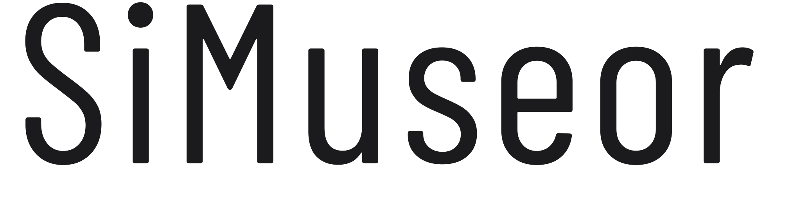

视觉识别系统
把现有项目里分散的品牌稿、界面样式与交互惯例，收敛成一套可执行、可验收、可演进的规范。全篇区分「现状 / 目标态 / 冻结后」，本手册描述的是目标态。
口径：本页 = VIS 全篇的单文件合订本。手册站的12 个分章页是同一份规范的分页排版（产品 UI 层，左侧两级导航：章 → 节）—— 内容同源、版本同号（v2.10），不是两套标准。真值是 SiMuseor-VIS.md；两者若有出入，以它为准。从 手册站总览 进分章读。
标识状态警示：LOGO 仍在迭代。已锁定的只有「Barlow Condensed Regular 400 / 混合大小写 SiMuseor / 字距 .028em」这一基线。字形手术、负形或正形月桂、独立图标、横竖版、最终色彩稿全部未冻结。design-options 六方向、第二轮 r2-* 八方向、Cormorant preview.html、smallcaps、designkit-artifacts/ 提案（含文件名带「终稿」的）一律为实验稿或已否方向，不得作为主标。本手册第 1、3、4、5、6、7、8 章均不依赖未定字形。
阅读约定：〔现〕＝代码里此刻真实跑着的状态；〔目〕＝本 VIS 的目标态，由工程阶段排期落地；〔冻〕＝必须等 LOGO 冻结后才能执行。§8 冲突裁决表 15 项全部标注「本轮不执行」，它们是待办清单，不是现状说明。
本套 VIS 解决了什么
两套颜色各说各话
品牌稿是暖纸墨黑，产品 UI 是中性灰 + 靛紫。裁决为分层双轨：靛紫保留为交互色，纸墨收敛为品牌层，产品 UI 零覆盖。
品牌与产品脱节
字标是 Barlow Condensed 400，正文是 Inter / 雅黑加六级近似字重；侧栏还挂着「MD / Model Downloader / Local Studio」。裁决为两层字体角色 + 四档字重 + 占位期替换。
规范没真正生效
全仓无 @font-face，基线字体从未加载；--faint 作文本仅 2.56:1；深色下 --accent 配白字仅 1.99:1。裁决为补字体文件 + 只改使用位置，不改色值。
依据资产：web/src/styles.css（1641 行）、app.component.ts、lab/lab-theme.ts、theme.service.ts、index.html、ui/* 组件、logo-vector/、designkit-artifacts/、tests/e2e/app.spec.ts（828 行）。所有数值均标注了对应变量、选择器或行号，详见三份阶段规范。
01 / BRAND CORE品牌内核
1.1 命名与定位
| 项 | 规范 |
|---|---|
| 品牌名 | SiMuseor（内嵌 muse / 缪斯）。唯一书写形式，大小写固定 S-i-M-u-s-e-o-r；禁 SIMUSEOR / Simuseor / Si Museor。中文名 司梦（司 = 掌管、主导；梦 = 梦境、想象）。 |
| 产品定位 | 剧集（电影）AI 导演台。核心工作流是 剧本 → 分镜 → 镜头 → 成片 —— 把想象变成成片。工作流是最大资产，「查 + 下载」是基础建设。 |
| 标识构成 | 两层：字标是主视觉，蝉形是辅助图形（低多边形几何分面，品红→橙）。两者共存构成「组合标」；蝉形单独出现当前仅限 favicon。详见 §2.0。 |
| 对外禁止 | Model Downloader、下载器、Local Studio 作为品牌自称；仓库名 model-downloader 仅作工程标识，不进 UI 文案。 |
| 保留不动 | 导航「下载任务」、路由 /downloads、存储键 md-*、测试标题 test.describe('Model Downloader Web UI') —— 功能名 / 工程名 / 测试元数据，不在更名范围。 |
语义注记：蝉形与品牌名是两个独立命题。蝉形不是「梦」的图解 —— 它承载的是蜕变 / 再生 / 正在发生；品牌名承载的是尚未成形的想象。两者在「导演台把想象推进成成片」这条链上相遇，但不互相定义。
1.2 调性（可验收，不是形容词）
| 维度 | 取值 | 可验收判据 |
|---|---|---|
| 气质 | 克制收敛、艺术书卷气 | 单屏交互强调色面积 ≤ 5%；无渐变铺底、无发光 |
| 字形密度 | 压缩窄体 + 紧字距 + 大留白 | 字标字距 .028em；容器上限 1240px、内边距 26/28px |
| 层次手段 | 明度与边框，不靠字重与阴影 | 字重只用 4 档；卡片默认无阴影 |
| 意象 | 蝉形（辅助图形）—— 蜕变 / 再生 / 缪斯之声 | 不进入字标内部；只作并列辅助图形与 favicon；不溢出、不对称排布 |
定位变更带来的调性影响：导演台天然要求精密、克制、有审美、有镜头感 —— 这让「克制收敛、艺术书卷气」在「剧集 AI 导演台」语境下比旧语境更成立。侧栏是唯一常驻位，一个高饱和图形全屏常驻会与「精密工具」的调性打架，所以蝉形必须压到辅助位，让「司梦」这个名字读出来，而不是让一只虫抢戏。
1.3 五条设计原则
- 强调色只给「可点的、当前选中的」。
--accent/--primary只允许出现在激活导航、主按钮、聚焦环、选中态、进度与链接 hover。避免：正文、静态图标、普通边框、标题、装饰色块。 - 边框优先于阴影。分层一律
1px solid var(--border)；阴影只给真正浮起的元素（弹层、主题菜单、吸底条）。避免：hover 靠加阴影抬升。 - 圆角只有三档
12 / 8 / 5，对应--radius / --radius-sm / --radius-xs。弹层 16px 与胶囊 999px 是登记过的两类例外，不是新档。 - 层次靠明度与留白，不靠加粗。字标严格 400；正文只用
400 / 500 / 600 / 700。避免：Bodoni/Didot 式极端粗细对比、给标题堆620/640/650/660/680六级近似字重、把 Medium 500 当「强调」。 - 装饰只做「减」，不做「加」。刀口、负形、发丝线、单点优于贴图形、加徽章、加光效。避免：对称月桂环、盾形徽章、放射星芒、渐变字、字标投影。
1.4 参照站的取舍
参照站实测 CSS 是「压缩窄体 + 全大写 + 紧字距 + 中等字重 + 大留白」。只采纳三项：压缩窄体、紧字距、大留白。不采纳全大写（混合大小写是锁定基线，且全大写后 M 不再是唯一大写，月桂失去视觉锚点）；不采纳中等字重（窄体本身的密度已提供重量感，且用户反感加粗）；Rules Gothic 是商业字体，不可取用。本 VIS 不重开字体选型。
1.5 Do / Don't
用 1px 线分区；用 --muted / --text-2 降层级；用 tabular-nums 排数字；需要纯反白时用线稿资产；把 SiMuseor 只放在品牌槽位；保留大留白。
把任一实验稿称为「终稿」；把暖纸色铺进 --panel；用 filter:invert() 反白；把标识放大做水印；拉伸 / 改字重 / 改字距 / 加阴影 / 加渐变；把旧「MD」方块与新字标并置。
02 / IDENTITY标识系统
本章是唯一处理字形的章节。v2.0 起，蝉形辅助图形已定案（见 §2.0），字形手术与月桂仍未冻结。冻结只影响 §2 与 §9（待定项），§1 / §3 / §4 / §5 / §6 / §7 / §8 不受影响。
2.0 辅助图形层 —— 蝉形 LOCKED v2.0 新增
用户已交付三帧成品 JPG（1536×1536 白底）。本节定义它如何进入标识体系。全部实测数字以 _cicada-measurements.md 为唯一基准（6 章），本节不重复推导。
SiMuseor
Barlow Condensed Regular 400
20px · cap-height 14.00px
墨迹宽 62.92px
MAX 帧
低多边形几何分面 · 品红→橙
侧栏 56×26px
视觉总宽 128.9px
2.0.1 三帧与分工
| 帧 | 形态 | 用途 | 本版接入 |
|---|---|---|---|
| MIN | 竖直收拢 | 展翅动画起始帧（未来） | ❌ 资产库储备 |
| MID | 半展 | 展翅动画中间帧（未来） | ❌ 资产库储备 |
| MAX | 全展 · 横向双翅 | favicon + 侧栏组合标 | ✅ 唯一接入帧 |
MIN 永久否决作为静态组合标：实测 19.7px 高时仅 9px 宽，读作竖直色条，不是图形。本版不上展翅动效 —— 三帧未归一化（头顶线 y = 271 / 349 / 461，Δ 78–190px），直接接会跳变。
2.0.2 组合标（侧栏品牌位）
| 项 | 值 |
|---|---|
| 蝉形 | MAX 56×26px（等比，宽高比 2.1693） |
| 图–字间距 | 10px（复用 .brand 既有 gap，不新增间距口径） |
| 字标 | Barlow Condensed Regular 400 / 20px / cap-height 14.00px / 墨迹宽 62.92px |
| 视觉总宽 | 128.9px · 占位宽 156px（字标槽 90px） |
| 侧栏品牌位可用宽 | 200px（236 − 12×2 − 6×2） · 视觉余量 71.1px / 占位余量 44px |
| 对齐 | 蝉形腹部尖端 ≡ 字标 baseline（地脚线对齐，非垂直居中） |
| 排布 | 蝉形在左、字标在右（横版） |

辅助地位的量化保证：蝉形宽 56px < 字标墨迹宽 62.92px（余量 11.0%）。蝉形上调至 ≥63px 即击穿，必须同步下调。§2.0.2 的尺寸不是审美偏好，是有阈值的约束。
2.0.3 三层尺寸策略
接缝线（白色发丝）在源图里原生宽 1px（相对 1397px 主体），渲染后：64px → 0.046px / 256px → 0.183px / 1024px → 0.733px。可见阈值是 ~1024px，不是 64px。
| 层 | 尺寸区间 | 处置 |
|---|---|---|
| L1 | ≥ 1024px | 保留原生发丝接缝 |
| L2 | 64 – 1024px | 接缝必然消失 → 改由面片色差承载识别；若要保留线感必须另出「加粗接缝」独立资产，不得用参数硬凑同一份 SVG |
| L3 | 16 – 64px | 独立重画简化版（5 档量化色带 + 深紫描边 #2a0a2e + 面片间隙 ≥1px），不缩放 MAX 帧 |
2.0.4 favicon
〔v2.6 重制〕favicon 由主理人手工重绘，与蝉形三帧出自同一套画稿，不再从 MAX 帧程序化派生。七档方形画布（16 / 24 / 32 / 48 / 64 / 128 / 256），逐档独立出图、透明底；不做色带量化、不加描边、不压缩画布比例。
| 产物 | 路径 |
|---|---|
| 资产源 | assets/cicada/svg/favicon/{16,24,32,48,64,128,256}.ico（手工产出，唯一来源） |
| 合并 ICO | web/public/favicon.ico（七档打包） |
| PNG 备用 | web/public/brand/png/favicon-{16,32,48,64,180}.png（180 由 256 缩放） |
| 可缩放 SVG | web/public/brand/favicon.svg（当前由 256 档内嵌；有矢量源后替换） |
换肤口径：深色与浅色共用同一份彩色资产（主色对深底 ≥4:1）；需要纯反白时改用线稿 cicada-max-lineart-b.svg，不用 filter:invert()。
2.0.5 深色主题
禁止「白线换深线」：深紫接缝 #2a0a2e 对深底 #15151a 对比度仅 1.02:1，完全不可见。
| 方案 | 最暗面片 vs #15151a | 判定 |
|---|---|---|
| A 提亮（定案） | 3.00:1 ✅ | 保色相保饱和、只抬明度 → 完整保留低多边形面片特征 |
| B 暗剪影 + 白骨架 | 1.24:1（剪影本体不可见） | 低多边形感变成线框；56×26px 下白线仅 0.05px，组合标尺寸不可用，仅作 ≥512px 展示层备选 |
| C 单色反白 | 15.57:1 | ❌ 丢失全部面片特征 |
实现要点：不可用「max(channel, floor) 抬亮」—— 那会把深紫推成不自然的灰紫。必须在 HSL 空间保色相保饱和、只抬明度，逐档验证对比度直到 ≥3:1。本项目实测仅最暗的 8 个面片需抬升（占主体 5.8%），主色阶原样保留。
2.0.6 禁用
- 提取蝉形做纹样 / 平铺 / 水印 / loading / 家族色编码
- 对称蝉形环 / 盾形徽章 / 放射星芒（通用反徽章条款）
- 非等比拉伸 · 改色阶 · 在深底用原色资产
- 单独出现在 favicon 以外的产品位
- 把「梦」与「蝉」强行等同（语言不重叠，会造成「名字被图形吃掉」的反向风险）
2.0.7 语义自洽性
| 层 | 依据 |
|---|---|
| 古典神话 | 柏拉图《斐德若》258e–259a「缪斯将人化为蝉，命其向缪斯报告谁敬奉哪位缪斯」—— 蝉是缪斯的信使 |
| 生产周期（最强） | 蝉的周期 —— 地下数年（剧本打磨 / 设定 / 分场）→ 破土（定稿进制作）→ 蜕壳（分镜 / 预演 / 粗剪→精剪）→ 羽化（成片）→ 居高而鸣（上线 / 发行 / 展映）。旧语境只能映射到「迭代 / 再生成」这个通例；新语境映射到一部剧集从开发到上线的完整周期 —— 影视专属。 |
| 中国语境 | 虞世南「居高声自远，非是藉秋风」—— 在影视语境下由「孤高不群 × 热闹批量生产」的摩擦，改判为「作者把自己的作品抬到高处让它被听见」的正解 |
品牌叙事应站在「工具替你扛下系统性的部分，你的想象不被流程压扁」这一侧。
2.1 已锁定基线 LOCKED
| 项 | 值 | 依据 |
|---|---|---|
| 字体 | Barlow Condensed Regular 400 | 用户附注 / design-options.html:62 |
| 字样 | 混合大小写 SiMuseor | 同上 |
| 字距 | .028em | 同上 |
| 字重 | 仅 400，禁 300 / 500 / 600 / 700 | 「不换字体、不调字重」 |
| 交付形态 | 纯路径 SVG，不依赖字体文件 | preview.html:160 |


#15151a / 字标 #f1ede4 暖白（非纯白） — 必须走独立资产，禁止 filter:invert()2.2 待冻结项 WIP
| # | 待定内容 | 候选 / 现状 |
|---|---|---|
| 1 | 字形手术最终方案 | 00 / A 断笔 / B 连字 / C 分节 / D 负形月桂 / E 菱点 / F 铭牌细线，或 D+A；推荐非定案 |
| 2 | 第二轮八方向去向 | O1 / W1 / W2 / S1 / M1 / L1 / E1；L1 是 M 内正形月桂，与 D 的负形月桂是两条路线，须先裁路线；W1/W2 试过加重字重，与用户偏好相悖，建议降权 |
| 3 | 月桂几何 | 叶数 6 或 8、咬口深度、枝干弧度、顶端距 M 肩线 ≥ 字高 10% |
| 4 | 独立图标 | 是否「M 单体 + 月桂」；32 / 64 / 128 各尺寸的删减规则 |
| 5 | 横 / 竖版组合 | 字标 + 中英副行；占位期只用横版 |
| 6 | 最终色彩稿 | 纸墨是否微调、是否另出「单色靛紫标」 |
| 7 | 安全区 / 最小尺寸实测值 | 占位期 1X / 120px / 32px / <20px 去月桂 |
| 8 | smallcaps 是否采纳 | 当前倾向不采纳，维持混合大小写 |
2.3 安全区与最小尺寸（占位期约束，冻结后实测复核）
安全区 1X
X = 字标大写 S 的 cap-height；四周净空 ≥ 1X，实用近似 ≥ 字标总高的 0.5 倍。
组合标 ≥ 120px
侧栏可用宽 200px（236 − 12×2 − 6×2，v2.0 更正 v1.0 的 190px —— v1.0 漏算 .brand 的 6px 双内边距）；120px 语义明确为「组合标最小视觉总宽」。
蝉形 ≥ 16px
独立蝉形最小 16px（低于此不可辨）；蝉形仅 favicon 单独使用。封面铭牌 20px 槽位放的是第三方家族标，不是本标识。
v2.0 尺寸分层：蝉形有四档最小尺寸 —— L-a 组合标 视觉总宽 ≥120px / L-b 蝉形单用 ≥16px / L-c 字标单用 ≥20px / L-d 独立图标 ≥32px。四档是耦合关系：蝉形只在 L-a 出现，L-b 以下蝉形必须退场。
2.4 单色 · 反白 · 禁用
单色与反白
浅底字标 --brand-ink #1b1b1e；深底字标 --brand-ink-reverse #f1ede4（暖白）。允许纯黑 / 纯白用于盖章、单色印刷、烫印。反白底 #15151a。
反白必须用独立 SVG 资产 + 明暗切换（参照 cover-plate.component.ts:256-261 的 .logo-light/.logo-dark），禁止 CSS 滤镜反转。品牌层不借交互靛紫，除非冻结时正式另出「单色靛紫标」并登记。
九条禁用
① 拉伸 / 压缩 / 改 .028em / 改 400 字重 ② 旋转 / 镜像 / 斜切 ③ 投影 / 发光 / 渐变 / 描边 / 内阴影 ④ 压在照片上而不垫白底槽 ⑤ 放大做水印 / 平铺 / 单独提取月桂 ⑥ <120px 用含月桂完整字标 ⑦ 用 filter:invert() ⑧ 与「MD」方块 / 旧称并置 ⑨ 采用任一实验稿作主标
2.5 占位规范（〔目〕冻结前可立即落地）
侧栏品牌位删掉 .brand-mark 渐变方块与旧称，改用组合标：蝉形（占 .brand-mark 槽）+ 字标（占 .brand-text 竖列）+ 中文副行。全站 .brand-wordmark 有且仅有 1 个实例：
<!-- app.component.ts:25-31 --> <div class="brand"> <img class="brand-mark" src="assets/cicada/svg/cicada-max.svg" width="56" height="26" alt="" aria-hidden="true"> <span class="brand-text"> <span class="brand-wordmark" lang="en" aria-label="SiMuseor">SiMuseor</span> <small class="brand-sub">剧集导演台</small> </span> </div> /* 关键数值 */ .brand { align-items: baseline; } /* 地脚线对齐 */ .brand-mark { width:56px; height:26px; flex:none; } /* MAX 蝉形 */ .brand-wordmark { font-family:"Barlow Condensed","Segoe UI",sans-serif; font-weight:400; letter-spacing:.028em; font-size:20px; line-height:1.1; color:var(--text); min-width:90px; white-space:nowrap; flex:none; } .brand-sub { font-size:10px; font-weight:500; letter-spacing:0; color:var(--muted); text-transform:none; }
v2.0 三处改写：① .brand-wordmark 的 min-width 120px → 90px（组合标占位宽 56 + 10 + 90 = 156px ≤ 200px）；② .brand-mark 从 30×30 渐变方块改为 56×26 的蝉形 <img>；③ .brand 的 align-items 由 center 改为 baseline（蝉形腹部尖端 ≡ 字标 baseline）。副行文案由「创作工作台」改为「剧集导演台」 —— 旧文案沿用的是已作废的定位。
可访问名安全：蝉形是纯装饰，必须 alt="" + aria-hidden="true"；可访问名只由字标的 aria-label="SiMuseor" 承载。严禁给 .brand 容器加 role="group" / aria-label（会导致品牌名播报两次）。
窄屏断点风险（必须同步处理）：styles.css:1616 现有 .brand-text{display:none} 会把整个文字列连字标一起隐藏。v2.0 须改为 .brand-sub{display:none}，保留横版字标（符合 v1.0 §10 裁决「全断点横版字标」）。
2.6 安全替换协议 —— 冻结只改 3 处
| # | 改动点 | 内容 |
|---|---|---|
| 1 | 资产 | simuseor-{light,dark,mono-light,mono-dark}.svg + icon-{32,64,128}.svg/png + 实测安全区 X / 最小宽 / 尺寸 / 色彩稿 HEX |
| 2 | URL 变量 | --brand-logo-light/dark、--brand-icon-light/dark 四个变量由 none 填成资产路径；明暗切换复用 :host-context([data-theme='dark'])，禁止第二处手写 <img> |
| 3 | 三个常量 | --brand-clear-space、--brand-min-width:120px、--brand-icon-min:32px 按实测值覆盖 |
不动布局、颜色 token、字号、类名、DOM 节点数量。<title> 改 SiMuseor；占位期 favicon 用 href="data:," 空图标（不含任何字形），冻结后换 brand/icon-32.svg 并让 ThemeService.sync() 同步 href。
主理人裁决 · 窄屏字标统一：字标在所有断点都是横版（占位期纯文字 / 冻结后同一元素换 SVG 字标），≤900px 只隐藏中文副行 .brand-sub，不设 30×30 图标的互斥布局分支；独立图标仅用于 favicon 与未来紧凑场景。理由：① 严格守住「冻结只改 3 处」这一治理承诺；② §2.7 已明确侧栏用横版字标；③ 两条互斥 CSS 规则无法靠「只填 URL」切换，物理上做不到；④ LOGO 未冻结，不值得为未定分支增加布局复杂度。阶段文档中 §2.5 / §4.4 / §8-K 关于「冻结后 900px 换 30×30 图标」的表述以此裁决为准。
2.7 冻结流程
| 步 | 谁确认 | 产出 |
|---|---|---|
| ① | 品牌主理人 | 汇总六方向 + 第二轮八方向，先裁定「负形 D / 正形 L1」路线 → 1 个候选方向 |
| ② | 用户 | 确认最终字形（含是否 D+A、叶数、横竖版）→ 冻结签字 |
| ③ | 主理人 / 设计 | 出冻结包（资产 + 实测值 + 色彩稿） |
| ④ | 前端 | 按 §2.6 只改 3 处，补 favicon 与 <title> |
| ⑤ | 主理人 | 回写 VIS：§2 全节、§3（若纸墨微调）、§5.1（月桂实测）、§7.2、§8（C/I/K 标完成）、§9 关闭待定项并升版号 |
03 / COLOR色彩系统
3.1 裁决 A —— 分层双轨，不全站换色
纸墨，只进展示面
LOGO 资产、关于页 / 启动页 / 分享卡、VIS 手册、品牌落款。新增 --brand-* 六枚，不进高频 UI，不设交互色。
zinc 中性 + indigo 交互色
全站界面继续用现有 :root 与 :root[data-theme="dark"] 两套 token，原样保留、零覆盖、零回归。
四条理由：① 靛紫承担「可点 / 选中」的功能语义，换成墨黑等于抹掉交互信号；② 暖纸带黄调，并置会拉低靛紫纯度（styles.css:20 自己写了「带蓝的底会让靛紫主色糊在一起」）；③ 书卷气由标识、窄体、留白承载，把工作台染成暖纸属于设计过度；④ 全站换色要重算近 60 个 token、25 家族色 × 明暗两套与大量 color-mix()，且会破坏已校准的暗色层级。
副裁决：两份品牌稿纸色不一致（preview.html 的 #f8f6f1 / #dedbd3 / #6d6a64 与 design-options.html 的 #faf8f3 / #e4e0d6 / #7d786e），统一取 preview.html 一组，后者降级为预览页专用底色。--brand-ink #1b1b1e 与 UI --text #18181b 明度差 < 2%，但不合并、不互相引用。
3.2 品牌层 · 纸墨六枚
3.3 产品层 · 中性阶与交互色
| 通道 | 浅色 | 深色 | 用途 |
|---|---|---|---|
| 表面四层 | #f5f5f6 → #fff → #fafafa → #f4f4f5 | #0b0b0d → #141417 → #1a1a1e → #202025 | 保留 4 层阶差，深色底不用纯黑 |
| 文字四档 | #18181b / #3f3f46 / #71717a / #a1a1aa | #ededf0 / #d4d4d8 / #8b8b94 / #5f5f68 | 一一对应，不增不减 |
| 线三档 | #e4e4e7 / #f0f0f1 / #d4d4d8 | #26262b / #1e1e22 / #34343a | 深色下「强」档比默认更亮（与浅色相反） |
| 交互色（文字型） | --accent #4f46e5（indigo 600） | --accent #a5b4fc（indigo 300） | 不翻色相，翻明度档 |
| 交互色（填充型） | --primary #4f46e5 双主题都不翻 + --on-primary #fff | 实心按钮 / 选中 chip，6.29:1 | |
| 语义色 fg | #15803d / #b45309 / #b91c1c | #4ade80 / #fbbf24 / #f87171 | 浅底用深档、深底用亮档；不用 500 荧光档 |
| 语义色 soft | 实色 #f0fdf4 / #fffbeb / #fef2f2 | rgb(… / .12) 半透明 | 深色下实色 soft 会成荧光块 |
| 新增控件边界 | --border-control #8b8b94（浅 3.38:1 / 深 5.44:1） | 仅 input / select / textarea / .radio-row 静止边框，不覆盖 --border | |
| 铭牌芯片v2.9 新增 | --plate-chip-ink #3b3a35 + --plate-chip-line rgb(0 0 0 / .18)（两主题同值，不翻） | 封面铭牌照片上的白底芯片：芯片底恒为白，故与主题无关 | |
填充型与文字型不得混用：实心填充一律 --primary + --on-primary（两主题同为 #4f46e5，白字 6.29:1）；--accent 是文字 / 描边 / 图标态（深色提亮成 #a5b4fc），白字压上去只有 1.99:1、--accent-hover 更差（1.49:1）。全局 button.primary 与组件 scoped 的 .btn.primary 都必须走 --primary；hover 亦然 —— 只改 border-color，不改背景（§8.5 裁决 5 / M1-d）。
3.4 使用比例与禁止组合
配额
产品 UI 单屏：中性表面 + 文字 ≥ 85%，边框 / 结构线约 10%，交互强调色 ≤ 5% 且实心靛紫块 ≤ 2 处 / 屏，语义色 ≤ 3%（仅状态出现时）。
品牌展示面：暖纸底 ≥ 75%，线 / 装饰 ≤ 5%，墨黑字标与文字 ≤ 20%，语义色 0。
禁止组合（摘）
墨黑字标压靛紫底；--brand-paper 作 UI 表面；--accent 用于正文 / 静态图标 / 标题；语义色 500 档作前景；深色下用浅色实色 soft；大面积渐变铺底；品牌暖白与 UI 冷白混用于同一文本块；--accent 作白字填充。
3.5 对比度红线（WCAG 实算，双主题）
| 色对 | 比值 | 判定 | 处置 |
|---|---|---|---|
--faint #a1a1aa on #fff | 2.56:1 | FAIL | 禁止承载文本（登记 21 处引用迁到 --muted / --text-2；落地须按全量 39 处，见 §8.2 补遗）；只作装饰线 / 非信息图形；::placeholder 保留文本只换色 |
深色 --faint #5f5f68 on #141417 | 2.91:1 | FAIL | |
--accent #a5b4fc + 白字 | 1.99:1 | FAIL | 实心填充一律 --primary；改 .filter-chip.active(:737) / :active:hover(:743) / .step-row.active .step-dot(:1469)（这 3 处 + 下行 button.primary:hover = §9.2 M 行共 4 处） |
--accent-hover #c7d2fe + 白字 | 1.49:1 | FAIL | |
indigo 400 #818cf8 + 白字 | 2.98:1 | FAIL | |
--primary #4f46e5 + 白字 | 6.29:1 | PASS | 双主题一致；「深色 --primary 不翻」由此成为硬约束 |
--primary-hover #6366f1（深色）+ 白字 | 4.47:1 | FAIL | 主按钮 hover 不得跟 --primary-hover；保持 --primary 底 + 白字，仅以 border-color:var(--accent) 作 1px 装饰描边（§8.5 裁决 5） |
--border #e4e4e7 on #fff（1.4.11 需 3:1） | 1.27:1 | FAIL | 新增 --border-control #8b8b94（3.38:1 / 5.44:1），不改 --border |
--muted #71717a on #fff | 4.83:1 | PASS | 仅可用于 --panel / --panel-2；落在 --bg(4.44) / --panel-3(4.40) 上的小字改 --text-2 |
品牌 #1b1b1e on #f8f6f1 / 反白 #f1ede4 on #15151a | 15.91 / 15.57:1 | PASS | 品牌层全部达标；不达标集中在 UI 层的使用位置 |
lab 深字 #1e1b4b on 400 / 300 亮底 | 5.36 / 8.02:1 | PASS | 两套实心填充分开处理：主 UI = 600 底 + 白字；lab 实验区 = 亮底 + 深字，归一到 {primary.300} 时只改色值、不动 contrastColor |
结论：以上修正不改任何 token 值，只改使用位置与新增变量，因此守住裁决 A「零覆盖、零回归」。焦点实线 2px solid var(--accent) 实测浅 5.62–6.29:1、深 8.14–9.86:1，满足 1.4.11 / 2.4.7 / 2.4.13。
3.6 明暗映射原则
唯一入口 data-theme（ThemeService.sync() 写 document.documentElement），组件内用 :host-context([data-theme='dark'])。映射不是逐一取反，而是保持相对层级：表面保留 4 层阶差、文字四档一一对应、深色「强线」比默认更亮、文字型强调翻明度档而填充型不翻、语义 soft 改半透明、阴影 α 增大、封面构图统一压一档 opacity:.66。禁止第二套主题开关，禁止 filter:invert()。
3.7 组件规格登记表 v2.1 新增 · v2.2 同步
本节是目标态规格登记，不是现状清单。全部数值为主理人 2026-11-17 14:00–14:30 实测或源码逐行核验所得。本节不改任何代码。
3.7.1 favicon 规格 3.7.2 .pill / .badge 分工 3.7.3 卡片几何 3.7.4 蝉形矢量结构 3.7.5 token 分层 3.7.6 PrimeNG 边界
3.7.1 favicon 规格（手工重绘）
favicon 不是「MAX 帧缩放」，也不再由脚本程序化派生：七档由同一套画稿手工输出，全档方形画布、透明底、逐档独立，不靠缩放适配。
| 项 | 值 |
|---|---|
| 画布 | 方形，七档：16 / 24 / 32 / 48 / 64 / 128 / 256 |
| 构图 | 蝉形居中，各档主体比例保持一致；不加底色板、不加描边 |
| 档位纪律 | 逐档独立出图；禁止用某一档缩放代替其余档 |
| 合并 ICO | web/public/favicon.ico（七档打包，浏览器按需取档） |
| PNG | web/public/brand/png/favicon-{16,32,48,64,180}.png（180 由 256 缩放） |
| SVG | web/public/brand/favicon.svg，当前为 256 档内嵌；有矢量源后替换同名文件 |
| 透明底 | 全档透明背景，不带底色板 —— 深色标签栏下不会出现白方块 |
| 深色 | 与浅色共用同一份彩色资产；纯反白场合用线稿 cicada-max-lineart-b.svg |
3.7.2 .pill 与 .badge 的分工 〔规范缺口登记〕
两者视觉相近但语义正交，必须分开使用。
.badge = 状态
已安装 / 已禁用 / 未登记。带语义色，一眼要看出好坏。用在单个实体的状态标注上。
.pill = 分类
文生图 / LoRA / VAE / HF。一律中性，只靠填充深浅分层。分类标签可并列很多个。
理由：分类标签经常并列很多个，用语义色会变成一墙红黄绿 —— 状态色一旦用于分类，语义即失效。
.pill 实现值（styles.css:832 起，实测）
| 属性 | 值 |
|---|---|
| 盒模型 | display:inline-block; vertical-align:middle; max-width:100% |
| 尺寸 / 内距 | height:20px; padding:0 9px; border-radius:999px |
| 边框 | 1px solid transparent |
| 底 / 字 | background:var(--pill-bg); color:var(--pill-ink) |
| 排版 | font-size:11px; font-weight:500; line-height:18px |
| 溢出 | white-space:nowrap; overflow:hidden; text-overflow:ellipsis |
| token | 浅色 | 深色 |
|---|---|---|
--pill-bg | #f1f1f3 | #26262c |
--pill-ink | #52525b | #b4b4bc |
styles.css 中 .pill 上方的注释已修正（原先「12px 内边距 / 12px 字重」的表述是错的）。以本表为准。变体：.pill-outlined（描边版，底太浅时用）、.pill-on-media（压在封面上，白 8% 半透明 + backdrop-blur，参照 comfy.org 做法）、.pill-author（发布者）。
3.7.3 卡片与列表行几何 （源码逐行核验）
| 组件 | 封面 | 内容内边距 |
|---|---|---|
md-model-cardui/model-card.component.ts | min-height:202px；封面 .card-plate 绝对定位铺满整卡（position:absolute; inset:0） | .card-body = 44px 13px 12px（顶部 44px 留给铭牌行，正文永不压上） |
md-library-cardui/library-card.component.ts | .mplate 固定 height:145px（position:relative，图片 .photo 绝对定位铺满） | .plate-foot 绝对定位 left/right:11px; bottom:8px；.mfoot = 8px 11px |
app-workflow-cardui/workflow-card.component.ts | .wc-cover aspect-ratio:16/10 | .wc-body = 8px 9px |
.nd-rowpages/nodes.component.ts:244 | 无封面，左侧 56px 方块（.nd-tile，grid-template-columns:56px minmax(0,1fr) auto） | 12px 14px 12px 12px |
.wf-rowpages/workflows.component.ts:1617 | 缩略图列 132px（grid-template-columns:132px minmax(0,1fr) auto） | 12px 14px 12px 12px |
卡片 hover 描边统一画在 ::after，不画在本体 —— 三个卡片（md-model-card / app-workflow-card / md-library-card）口径一致。
本体的 inset 描边在铺满型封面下会被盖住：md-model-card 的 .card-plate 是 position:absolute; inset:0，铺满整卡 → hover 视觉上毫无反应（实测顶部 20px 的 accent 像素 off=37 / on=37，完全不变）。
::after 在两种封面结构下都成立：model-card 的 ::after 是 z-index:2（盖得住铺满封面），library-card 的是 z-index:3（盖得住流式封面）。
⚠️ 常见误解：box-shadow 的外圈绘制在 border box 之外，不被元素自身的 overflow 裁剪（overflow 只裁剪子元素）—— 所以本体外圈也可行（实测 md-library-card 外圈 accent 像素 off=0 → on=297，清晰可见）。但不统一，仍以 ::after 为准：口径统一的价值在于「一条规则走天下」，而不是「视觉恰好一样」。
三卡片实测（顶部 24px 带的 accent 像素，off → on）：md-model-card 40 → 329（::after z-index 2） · md-library-card 0 → 289（::after z-index 3） · app-workflow-card 0 → 289（::after）—— 三张全部可见、落点全部在 ::after（提交 b006877 把 library-card 从本体外圈改到 ::after）。
像素级验收的判据：测 hover 反馈时，accent 像素用欧氏距离判定（目标色 rgb(79,70,229)，阈值 60 —— 含义是「肉眼能明确认出是那个靛蓝」），不要用单通道差值 —— accent 的 r 与 g 仅差 9，用「r−g 大」判蓝会假阴性（把 accent 本身判成非蓝，得出「hover 无反应」的错误结论）；用「b−r 大」又会把偏蓝的灰色误判成 accent（假阳性）。
// accent = rgb(79,70,229)
const isAccent = (r, g, b) => {
const dr = r - 79, dg = g - 70, db = b - 229;
return Math.hypot(dr, dg, db) < 60;
};
登记更正：主理人简报中 .nd-row / .wf-row 的内边写作「10px 14px」，源码实测两者均为 12px 14px 12px 12px（四值：上 右 下 左）。10px 10px 10px 14px 属于 workflows.component.ts 的 .wf-toast，与两行无关。以本表为准。
3.7.4 蝉形矢量的可编辑性结构
assets/cicada/svg/cicada-max.svg 的结构口径（v2.6 手工重制版）。
| 项 | 值 |
|---|---|
| 面片 | 82 个 <polygon>（max）/ 57（mid）/ 36（min），每个面片一个 class |
| 触角与细节 | 4 条 <path>（左右触角各 2 条） |
| 分组 | 11 个 <g>，其中两个具名分组：翅膀 / 翅膀-2 |
| 上色方式 | 内嵌 <style> 定义 .cls-1…cls-44（max）的 fill —— 44 个类、86 次引用（引用数 ≠ 类数：86 = 82 polygon + 4 path）；mid 45 个类 / min 21 个类。纯色分面、零渐变。改色 = 改 class 的 fill |
| 深色版 | cicada-max-dark.svg 与浅色版逐字节相同 —— 新配色在深底 ≥4:1，不再维护独立反白资产；纯反白用线稿 cicada-max-lineart{-b}.svg |
旧管线已退役：_flat_*.svg 纯色底座、add_facet_gradients.py 渐变注入、vectorize.py 描摹、png/ ico/ 旧导出、-mono 剪影均已删除 —— 它们只服务旧版（82 条渐变 / 86 个 id）资产，手工重制后不再生成。
部署同步纪律：后端服务的是 web/dist/browser/，不是 web/public/。改 favicon 或品牌资产后必须重新 npm run build。
3.7.5 token 分层三层结构
web/src/vis-tokens.css（623 行）的分层口径：
| 层 | 命名 | 数量 | 职责 |
|---|---|---|---|
| primitive 原始值层 | --pri-*品牌色板沿用 --brand-* 登记名 | 72 | 主题无关的原始值；同一套 primitive 同时供给浅色与深色语义层 |
| semantic 用途语义层 | --sem-*品牌语义沿用 --brand-surface/-fg/-rule | 46 | 用途语义；必须用 var(--pri-*) 引用第一层，不允许引用别的 semantic（避免语义链式耦合） |
| component 组件槽位层 | --cmp-* | 0 只建结构，不写值 | 单组件槽位 |
| 品牌层六枚 | --brand-* | 16 | 按角色归入 primitive / semantic（归层看角色，不靠前缀判断） |
改哪一层的后果（三层的设计意图）
| 改 | 影响面 |
|---|---|
| primitive | 全站联动 —— 例：把 --pri-neutral-0 从 #ffffff 改成 #fffdf8，所有引用它的 semantic 一并变 |
| semantic | 影响一类用途 |
| component | 只影响单个组件 |
- 引入顺序：
angular.json:29-33=tailwind.css→styles.css→vis-tokens.css（最末）。理由：CSS 自定义属性同特异性下「后定义者生效」，放最末可保证本层胜出，且不参与任何覆盖关系。 - 不写
@import/@layer—— 避免与 Tailwind v4 的@layer theme产生层序歧义。 - 明暗只发生在 semantic 层：primitive 一套共用，深浅两套 semantic 都只引用同一批
--pri-*，深色档位不同而已（与 PrimeNG preset 的做法一致）。 - 零覆盖承诺：
vis-tokens.css不重新赋值styles.css:17-74 / :77-122中任何已有--*，交集必须为空（由vis-check.mjs校验）。
3.7.6 PrimeNG 移出首屏
PrimeNG 仅存在于实验区，且已按需装载，不在产品首屏。
- 路由：仅
lab/primeng与lab/tailwind（app.routes.ts:86等）→ 均为/lab/*下的独立页面。 - 按需装载：
primeng/config改为动态import()，主题运行时与 Aura preset 只在真正进入/lab/primeng时才拉下来。首屏 chunk 实测 930,702 B → 781,515 B（−16.0%），gzip 205.87 → 185.53 KB；primeng/@primeng/themes已移入devDependencies。 - 产品首屏（
/workflows、/models、/nodes）无任何primeng引用，组件均为自绘（app-workflow-card/md-model-card/md-library-card/ui-panel等）。 - 因此 PrimeNG Aura preset 不自继承
--brand-*这条约束（§8.1）只影响/lab/*，不构成产品首屏的回归风险。 - 主题边界不变：
lab-theme.ts:72的contrastColor仍为深字（未改成白字），与 §3.5 硬约束一致。
3.8 渐变层 --grad-* v2.6 新增
VIS §3.4 只禁了「大面积渐变铺底」，但全站本来就跑着 6 类渐变（favicon 5 档色带 / 卡片信息区遮罩 / 封面照片 scrim / 封面 5 构图纹理 / 家族铭牌底 / 站点底纹），此前既没有 token 也没有约束。本节把渐变收口成 4 级 12 枚 token + §3.10 的站点级 3 枚。
| 级 | 名称 | 现状出处 | 规则 |
|---|---|---|---|
| G0 | 品牌色带 | favicon 色带（蝉形 v2.6 手工重制后为 82 面片纯色、零渐变，已不属本级） | 品红 → 橙暖弧，跨色相是刻意的；每面片独立成条，禁改成一条全局贯穿渐变 |
| G1 | 家族色渐变 | 家族铭牌底（model-tone.ts 三槽派生） | 同色相、只走明度阶：Δh ≤ 10°（实测 flux 7.2° / qwen 9.3°） |
| G2 | 遮罩 scrim | 卡片信息区遮罩 / 封面照片 scrim | 文字压照片的唯一手段；白字压在最亮照片上时 alpha ≥ 0.57（现 0.45 在纯白照片上只有 3.12:1） |
| G3 | 构图纹理 | 封面 5 变体中的斜纹 / 点阵 / 柔光 | 只出家族色派生，不引入独立色；深色主题浓度自动下调 |
| G4 | 交互渐变 | 主按钮 / 选中态 | 受限：面积 ≤2 处/屏，两端白字都 ≥4.5:1，深浅各一套 |
| G5 | 站点底纹 | 站点整体背景（§3.10） | 纯中性底 + 一束光 + 中性纸纹；底纹不计入「中性表面 ≥85%」配额；禁标识平铺 |
- token 已在两层声明：设计层
artifacts/vis/vis-tokens.css与生效层web/src/vis-tokens.css（真正接入构建）。两者取值必须逐字一致 ——vis-check.mjs§3C 交叉校验按值比对。 - 每枚 token 只放一条渐变：
background-image里一个var()若展开成两条渐变，background-size/repeat/blend-mode只给 1 个值时，CSS 会把剩下的层按最后一个值循环套用（实测 radial 被按 220px 平铺且被 multiply 染色）。 - 9 条硬约束与逐条实算见
reference/color.html§s-19。
3.9 色域约束摘要 v2.6 新增
「克制」必须能被量出来。完整 13 条约束表 + 国际色彩锚点（Pantone / 红点）见 reference/color.html §s-17 / §s-18；家族色与任务色的逐槽实测见 §s-16。三条最常被违反的：
- 家族底永远是低彩度纸感：L* ∈ [93, 96]、C* ≤ 12（实测 25 族）。任何家族底都不得是高彩度色块。
- 家族纹样
mark永不承载文本：实测mark/bg仅 1.68–2.81:1，只作纹样 / 图形 / 渐变端点。 - 家族字
inkonbg须 ≥4.5:1：实测最低 4.24:1（lumina） —— 唯一未达标项，该家族 ink 不得承载小字，或把 ink 提到 ≥4.5:1。
3.10 站点背景与底纹 v2.7 新增 · 已裁决
裁决：站点整体背景 = 纯中性底 + 一束光（色场）+ 中性纸纹。不再是一张平涂色。本节是站点级背景的唯一出处；原先散在 §3.1 / §3.2 / §3.4 / §5 / §7.1 的背景相关条款以本节为准。
| 层 | token | 取值 | 纪律 |
|---|---|---|---|
| 页面底 | --bg | 浅 #f5f5f6 / 深 #0b0b0d | 仍是中性灰，不改 |
| 色场 | --grad-site-wash | radial 98%×78% at 76% -14%（v2 单束柔光） | 设计上限 α0.090 → 落地 α0.063（色场 70%）；总上限 α0.07 |
| 柔光 | --grad-site-glow | none（v2 无第二层渐变） | 变体需要时再开 |
| 肌理 | --texture-site-paper | SVG feTurbulence 纤维噪声 tile 220px | 浅底灰噪声 opacity 0.204（纸纹 60%） / 深底白噪声 screen |
- 落地：
web/src/styles.css与 VIS 手册站artifacts/vis/assets/vis.css的body同款接线 ——background-image: var(--texture-site-paper), var(--grad-site-wash), var(--grad-site-glow)+background-blend-mode: multiply, normal, normal（深色screen, normal, normal）+ 三层都background-attachment: fixed。 - 浓度口径：浓度不再由原型页滑杆承载（该页已于 2026-11-21 退役），直接写死在两枚 token 的取值里 —— 色场
--grad-site-wash峰值 α 0.063（= 设计上限 0.090 的 70%），纸纹--texture-site-paperopacity 0.204（浓度 60%）。页面上的值 = 线上值；要调浓度只改这两枚 token 的取值。 - 八条硬约束：① 峰值 α ≤ 0.07，底仍读作中性灰；② 纸纹中性无彩（不带黄、不带暖）；③ 深色换噪声图而非反相；④ 禁把标识铺成底纹（蝉形线稿平铺 2026-11-21 已否）；⑤ 底纹不计入 §3.4 的「中性表面 ≥85%」；⑥ 导出物 / 分享卡 / 打印不带底纹；⑦ 两层都
background-attachment: fixed；⑧ 噪声一次性栅格化，若实测掉帧改scroll而不是删底纹；⑨ 侧栏透明渐变 —— 左缘实面给文字、右缘化到透明，站点底纹从内容区铺进导航栏，窄屏横条改竖向 180deg 向下化开，侧栏不加投影。 - 变体集：渐变共 6 个变体（v2 单束柔光已定稿 / v1 暖弧 / v3 靛紫场 / v4 晨光竖落 / v5 对角双光 / v6 色带横铺），取值见下表 —— 对比实验稿已于 2026-11-21 退役删除，结论固化于本表（候选不再是候选，留着只会让人以为还能改）。纯色、单独渐变、单独纸纹三形态均不采用。
3.11 资产守门员 vis-asset-guard.mjs v2.8 新增
裁决：「SVG 是唯一图片资产真值」这条路线，必须配一个可机检的契约，否则只是一句口号。vis-check.mjs 管的是「设计层 token / CSS 规范」；本工具管的是落到磁盘上的 SVG 资产本身 —— 能不能被规范化（无语义漂移）、能不能被指纹（谁改了什么）、合不合规格、差异怎么报。
| 项 | 落位 |
|---|---|
| 工具 | artifacts/vis/vis-asset-guard.mjs（与 vis-check.mjs 同级；Node 栈，CI 的 node:22 镜像可直接跑） |
| 验证 | tests/vis-asset-guard.mjs（26 条断言，全通过） |
| 台账 | artifacts/vis/asset-ledger.json（由 fingerprint --out 生成；无时间戳，可重复生成且字节稳定） |
四个子命令
| 子命令 | 作用 | 是否写文件 |
|---|---|---|
normalize | 规范化 SVG 文本（属性顺序 / 缩进 / path d 断行 / style 规则排序） | 默认不写；--write --file <path> 才写，且先备份 .bak |
fingerprint | 指纹台账（原始字节 sha256 + 规范化文本 sha256） | --out 才写 |
assert | 规格断言 A1–A8 | 不写 |
report | 汇总 Markdown 报告（违规项 / 跳过项 / 提示项 / 棘轮） | --out 才写 |
八条断言
| # | 断言 | 口径 |
|---|---|---|
| A1 | viewBox 存在且合法 | 4 个合法数字、宽高 > 0 |
| A2 | 主体占位比 25%–100% | Playwright 渲染后量 getBBox()，裁剪进 viewBox |
| A3 | 描边档一致 | 档位 ≤3、每档 > 0.25；纯色面片资产只报 INFO，不判违规 |
| A4 | 深浅版本成对存在 | X.svg 必须有 X-dark.svg；favicon 与两个 lineart 豁免 |
| A5 | 深浅版本内容不同 | 规范化指纹一致即违规（= 只是复制了一份） |
| A6 | 面片数在合理区间 | 元素 ≤5000 / path ≤2000 / 渐变 ≤500 / style 规则 ≤500 |
| A7 | 规范化语义自检 | 规范化前后元素数、属性数、class 引用数必须一致 |
| A8 | fill 色对比度 ≥3:1 | 背景按主题取 --brand-paper / --brand-paper-reverse；只有主色阻塞，内部面片只提示 |
棘轮口径（与 vis-check.mjs 同一套语言）
已知债务按「断言 id | 资产路径」精确登记，数量只降不升：
| 退出码 | 含义 |
|---|---|
| 0 | 全通过 |
| 1 | 违规项等于棘轮基线 —— 旧债仍在，仅提示，不阻塞 |
| 2 | 违规项超出棘轮基线 —— 阻塞 |
| 3 | 脚本自身出错 |
- 为什么必须有棘轮：一个永远红的守门员，没人会看它。当前基线 3 条（全为 A5），等蝉形深浅两版真正分化后即可收紧为 0。
- A8 的品牌标记豁免：WCAG 1.4.11（非文本对比度）明确免除 logo / 品牌标识，且品牌色是主理人冻结的裁决结果，工具无权推翻。故品牌标记（
cicada-max/cicada-mid/cicada-min/ 两个 lineart /favicon）的主色对比度报 INFO 不阻塞，实测值仍完整列出（例：cicada-max.svg主色#fa6279对#f8f6f1= 2.74:1）。 - 只读承诺：默认只调用
fs.readFileSync/readdirSync/git ls-files，结果打到 stdout。唯一会写资产的路径是normalize --write --file <path>（先备份.bak再原地覆盖）；拒绝不带--file的批量覆盖，避免误伤并行改版中的资产。本工具不会"修复"资产、不删属性、不改属性值。 - 零依赖：只用 Node 内置模块。Playwright 是可选增强 —— 从
tests/node_modules显式解析，解析不到或浏览器起不来 → 相关断言标记 SKIPPED，其余照跑，绝不崩溃、绝不联网。 - 当前实况（2026-11-21）：跟踪资产 16 个 / 现存 9 个 / 已删 7 个（被另一工作流删除的
-mono剪影与_flat_*底座，跳过不修复）。现存 9 个：A1/A2/A4/A6/A7 全通过，A3 为 INFO，A5 三项（max / mid / min 的深浅两版逐字节相同）等于基线，A8 已豁免为 INFO。注意：蝉形资产正被另一工作流改版，本工具只读，基线会随改版变化。
3.12 原型页生成管线 v2.10 新增
裁决：原型页是展示面（render surface），不是手写页面。手写的展示面会「看起来正常」地漂 —— 样式改了、字段改了、版本号改了，都要人去同步三处，而且没人知道它跟真值脱节了。
| 层 | 文件 | 职责 |
|---|---|---|
| 类型 | artifacts/vis/prototypes/_types.mjs | 形状定义 —— 一类原型长什么样、由哪几块拼成、每块怎么渲染 |
| 定义 | artifacts/vis/prototypes/_defs.mjs | 数据 —— 唯一手写处。每个原型一份：id / type / file / status |
| 展示面 | artifacts/vis/prototypes/*.html | 生成物，勿手改 |
工具 artifacts/vis/vis-proto.mjs（Node 零依赖）：build 从定义重新生成展示面；check 防漂移 + 生命周期（只读）。
check 管四件事（任一阻塞项 → 退出码 2）
| 检查 | 判据 | 拦的是什么 |
|---|---|---|
| 漂移 | 重新渲染 ↔ 入库展示面逐字节比对 | 手改了生成物；或改了定义忘了重新生成 |
| 退役 | status: 'retired' 的原型，展示面文件必须已不存在 | 实验结束了还留着 —— 读者会以为候选还能改 |
| 野生文件 | prototypes/ 下有 .html 但注册表里没有 | 绕过管线的手写页 |
| 类覆盖 | 展示面用到的固定 class 必须在样式表里有定义 | 改名后静默失效（家族色类 f-* 是开放集合，未定义 = 中性兜底，符合 §s-16） |
vis-check.mjs的 [3.6] 段调vis-proto check，漂移即阻塞。- 生命周期口径：实验类原型的使命是「比选」，裁决落地就退役 —— 留着会让读者以为候选还在可选。退役 = 定义里
status改retired+ 删掉展示面文件 + 从shell.js的P/NAV与总览页索引卡移除。退役记录保留在册，是「不许复活」的凭据。 - 已退役：
backgrounds（站点底纹变体集）—— 2026-11-21 随 v2 单束柔光定稿退役；六个变体的取值固化在 §3.10，浓度口径改为直接写死在--grad-site-wash/--texture-site-paper两枚 token 的取值里。 - 版本标签不手写：展示面的版本号取自
SiMuseor-VIS.md标题行 —— VIS 升版后原型页的版本标签跟着变；改了定义忘了重新生成，check会报漂移。 - 首个实例：
cards（资产卡片骨架原型，14 张样张 = 模型 5 / 工作流 5 / 节点 4）。改造前后结构与像素均完全一致：标签序列、可见文本、class 集合、引用路径逐项比对通过，且同视口 PNG 字节完全相同（含全部照片解码后比对）。
3.13 手册站结构 / 样式 / 骨架检查 v2.14 新增
裁决：页面能渲染出来 ≠ 页面是对的。一节一页拆分之后，标签不配平、样式打不中、骨架不齐这三类故障一个都不报错 —— 浏览器会静默纠错，页面照常显示，只是「看着不太对」。人眼扫一遍抓不住，机器能当场拦住。
全轮排查（2026-11-21，72 页）
| 指标 | 排查前 | 排查后 |
|---|---|---|
| 结构非法的页面 | 31 | 0 |
| 标签配平错误（未闭合 / 孤儿闭标签 / 越级闭合） | 23 | 0 |
| class 无法命中的类名 / 出现次数 | 51 / 59 | 0 / 0 |
| 骨架缺失 | 2 | 0 |
| 链接与资源失效 | 11 | 0 |
两条根因
- R1 拆分按
<h3>的文本位置切，切在了嵌套容器中间（fm-cols/header.fm-col-head/ 章页尾部块）→ 标签不配平，浏览器纠错后渲染成垃圾。 - R2 12 个旧章页里只有 4 个带
class="ref"——vis.css里 442 条.ref作用域规则因此对整整 8 个章从未生效（标题字号、段间距、导语颜色、区块下边距全部掉回浏览器默认值）。
工具（Node 零依赖）
| 文件 | 职责 |
|---|---|
artifacts/vis/vis-dom.mjs | 真实 HTML 解析器（分词 + 标签栈 + HTML5 void/raw/implicit-close 规则）+ CSS 解析 + 选择器匹配（祖先作用域感知）；不是正则 |
artifacts/vis/vis-layout.mjs | check（阻塞级）/ report（诊断报告）/ pages（逐页清单） |
check 管五件事（任一阻塞项 → 退出码 2）
| 检查 | 判据 | 拦的是什么 |
|---|---|---|
| 结构合法性 | 开闭标签栈配平（无未闭合开标签 / 无孤儿闭标签 / 无越级闭合） | 拆页切在容器中间 |
| class 可命中 | 每个带 class 的元素，真的能被样式表里某条规则命中 —— .ref 这类祖先作用域按真实祖先关系参与判定 | 「祖先没有 class="ref"，所以这条规则永远打不中」 |
| 关键结构 | doc-head / section.ref / 直接子选择器契约（section > h3 / > h4 / > p.lead）/ data-page / data-root / nav-label ≤ 6 字 / 章首页目录标记 | 骨架不齐 → 每页长得不一样 |
| 链接与资源 | href / src 落盘可达；#hash 锚点在目标页存在 | 章级锚点 #c-* 带进节页后的死链 |
| 孤儿徽标头 | 头容器里只剩计数徽标、没有标题 | 标题被提升为页面 h1 后，计数被 margin-left:auto 推到面板角上，孤零零挂着 |
vis-check.mjs 的 [3.8] 段调 vis-layout check，阻塞级。
- 渲染验收：工具
artifacts/vis/vis-render.mjs（Playwright + Chromium 实跑，逐页量计算样式）——node artifacts/vis/vis-render.mjs。72 页全量结果：0 JS 错、0 横向溢出、0 样式不符（.doc-head h122px /sectionmargin-bottom56px /section > h314px /section > h412px /section > p.lead12.5px）、左侧导航每页都渲染得出来。 - 为什么不进
vis-check——vis-check是纯静态、零依赖、秒级的门禁，CI 每次都跑；本脚本要起浏览器跑 72 页、耗时分钟级，属于「改样式后 / 发布前跑一次」的重检查。静态检查管「契约」，渲染验收管「画出来对不对」，两者不可互相替代。 - 拆分是幂等的：
vis-manual split连跑两次 → 逐字节相同。节页由split从 git 里的旧章页按 DOM 级块拆分生成（不是按文本位置切）；vis-manual check对章首页与导航块做逐字节比对，节页的漂移靠拆分幂等 +[3.8]的结构检查兜底。
04 / TYPOGRAPHY字体系统
4.1 两层角色，绝不混用
| 角色 | 字体栈 | 字重 | 范围 |
|---|---|---|---|
| 品牌展示字 | "Barlow Condensed","Segoe UI",sans-serif | 仅 400 / .028em | 字标 .brand-wordmark、品牌级大字；不用于中文 |
| 西文 + 中文正文 | "Inter","Segoe UI","Microsoft YaHei",system-ui,sans-serif | 400 / 500 / 600 / 700 | 全站 UI（沿用 styles.css:131，不改字体栈） |
| 等宽 / 数字 | "Cascadia Mono",Consolas,ui-monospace,monospace | 400 / 500 / 600 | .mono、所有量化读数 |
中英混排不显式切换字体（按 glyph 自动 fallback）；同一行共享 font-size / font-weight / line-height；负字距只施加于纯拉丁串，含中文的串一律 letter-spacing:0。所有量化读数强制 font-variant-numeric:tabular-nums。
4.2 字重白名单与字距四档
白名单 400 / 500 / 600 / 700。理由：Segoe UI / 微软雅黑不是可变字体，没有 550 / 620 / 660 这些轴，浏览器会就近取整或合成加粗，导致中英混排同声明却粗细不一致；且五级近似字重在 13px 下肉眼无差别，正是 styles.css:29 自己反对的「看起来一样但代码里不同」。归并规则：550 → 500、620 / 640 / 650 / 660 / 680 → 600。字距只留 -.02em（大标题）、-.01em（小标题）、0（正文 / 中文）、+.09em（kicker）、+.028em（字标锁定）。
4.3 字号阶梯
| 级别 | px | 字重 | 行高 | 字距 | 用途 |
|---|---|---|---|---|---|
| DISPLAY（品牌层） | 40 | 400 | 1.1 | .028em | 品牌展示面大字，Barlow，仅品牌层 |
| D1 页面主标题 | 22 | 600 | 1.2 | -.02em | .page-heading h1（现状 660 / -.022em） |
| D2 展示标题 | 16 | 600 | 1.35 | -.01em | .hero-title |
| H 面板标题 | 14 | 600 | 1.4 | -.01em | .panel-heading h2、弹层标题 |
| H3 卡片标题 | 13 | 600 | 1.4 | 0 | .task .title、.mc-title |
| B 正文基准 | 13.5 | 400 | 1.55 | 0 | body |
| B2 控件 / 次级 | 12.5 | 500 | 1.5 | 0 | button、input、.nav-sub-item |
| NAV 导航项 | 13 | 500 | 1.55 | 0 | .nav-item（产品侧栏 · 32px 高 / padding 0 9px / radius 8px） |
| L 标签 / 辅助 | 11.5 | 500 | 1.45 | 0 | .field label、.mono、.badge |
| C 角标 / kicker | 10 | 600 | 1.4 | +.09em | .page-kicker、组标签、表头（拉丁大写） |
| NUM 数据读数 | 15 | 600 | 1.2 | 0 | .spec-value 等，强制 tabular-nums |
| XS 极小 | 9.5 | 500 | 1.3 | +.02em | 允许保留，不鼓励新增 |
现状 27/22/21/16/15/14.5/14/13.5/13/12.5/12/11.5/11/10.5/10/9.5 收敛后可归到上表；14.5 / 12 / 11 / 10.5 作为相邻辅助值允许存在，但不再新增中间字号。
导航规格归属〔v2.14 澄清〕：上表登记的 .nav-item / .nav-sub-item 是产品 UI 层的导航组件，也是手册站自己侧栏的规格 —— vis.css 的 .app-nav 直接复用同一组几何（一级可点项 32px / padding 0 9px / radius 8px / 13px·500；二级节项 29px / padding 0 9px / radius 8px / 12.5px）。规范发布什么，手册站就用什么：渲染验收 vis-render.mjs 逐页量这两组值，不一致即报错。手册站的两级结构（章头可展开）与产品的一级 + 组标题结构不同，但行几何、字号、选中态口径同源。
同时修掉一处同名不同义：手册站的「章头」曾复用 .nav-group 类名，而产品的 .nav-group 是组标题（10px/600/uppercase 静态标签）。手册站的 .nav-group 规则没加作用域，把 display:flex / padding 0 4px 0 8px / radius 6px / min-height 28px 漏进了组件章 §s-311 的产品导航演示 —— 演示出来的不是产品真实样子。现手册站侧栏规则一律限定 .app-nav，演示页恢复产品原样。
4.4 落地缺口：基线字体其实还没生效 现状
全仓 web/src/** 无 @font-face、web/public/ 无字体文件；BarlowCondensed.ttf / Inter.ttf 只躺在 logo-vector/fonts/。即现状「Inter / Barlow Condensed」全部回退到 Segoe UI / 微软雅黑，字标基线字体在产品里根本没生效。工程阶段补法：转 woff2 进 web/public/fonts/ + 两条 @font-face（font-display:swap；Barlow 只声明 400、Inter 声明 100 900），仅对品牌类声明 Barlow；补齐后用截图实测 .028em 与「缩小等效 190px」一致性。在此之前不得宣称基线字体已生效。
05 / GRAPHICS图形与意象
5.1 月桂 —— 从品牌标志层移除，归位作品层 v2.0 改判
用户 2026-11-13 拍板新定位后，月桂的归属被重新裁决。结论：月桂从 VIS 的「品牌标志层」正式母题体系移除 → 重新归位为「作品层荣誉母题」。
| 层 | 月桂 | 蝉形 |
|---|---|---|
| 品牌标志层（主标 / 辅助图形层 / favicon / 字标内部） | ❌ 不进入 | ✅ 独占 |
| 作品层（将来「本片获奖 / 入选 XX」标记） | ✅ 保留为该层母题 | — |
| 字形手术实验池 | ❌ 移出 | — |
正面回应「电影奖项 = 月桂」这一反驳：该反驳成立 —— 影视语境里月桂确实比蝉更贴品牌，但它不构成品牌标志层的正确归属。四条理由：
- 月桂回答「作品得了什么奖」，导演台回答「作品怎么被做出来」 —— 把工具的标志做成奖杯 = 用结果冒充工序。导演台是所有剧集的前置工序，是车间不是颁奖礼。
- 行业惯例本身就支持这个分层 —— 电影行业里导演台 / 制片软件从不用月桂做标志，月桂只出现在海报底部的获奖标识上。月桂在电影工业中的既有位置，恰恰就是「作品层的荣誉印记」。
- 虚假承诺风险 —— 品牌标志 = 月桂，等于暗示「用司梦导出的片子能拿奖」。工具不能替作品领奖。
- 时态必须与品牌名同层 —— 「司梦」指向尚未成形的想象，蝉的羽化是正在发生，月桂是已经发生并被授予。
为何「M 内嵌月桂」要从实验池移出（而非仅降级）：两个图形母题共处一个标志 = 稀释；「藏在 M 内」是字标内部方案，与「蝉形在左并列」不兼容；且其价值基础（荣誉语义）在品牌层已被论证为层级错配 —— 价值基础错位的方案不该继续占实验池名额。字形手术其余方向（design-options 六方向、_r2_strip 八方向）保持开放、不受影响。
不变的禁止方向：禁止提取做纹样 / 平铺 / 水印 / loading / 家族色编码；禁止对称月桂环、盾形徽章、放射星芒（通用反徽章条款，与意象更替无关）。
5.2 封面铭牌 —— 保留不改
app-cover-plate 的 5 种构图（mo-0 出血圆 / mo-1 斜纹 / mo-2 同心环 / mo-3 点阵 / mo-4 双光斑）与 25 家族色 × 明暗两套 全部保留原值：它们编码的是「模型家族」，不是品牌色，不参与本 VIS 色板裁决。11px 单行内容（厂牌名·参数·量化 + 右端形态角标）不得回升。SiMuseor 标识不进入铭牌 —— 20px 槽位放的是第三方家族标，遵守「固定槽位、不改色、不拉伸、不加阴影、不放大做背景、深色用独立反白资产」的指称性使用规则。注意铭牌内的 .brand 与外壳 .brand 同名不同物（组件 scoped），不重命名、不互注标识变量。
5.3 图标与几何母题
图标网格
viewBox="0 0 16 16"；主线宽 1.5px（现状 1.6 → 统一），强调 1.8px / 铭牌自绘 2.4px；stroke-linecap/linejoin:round、fill:none；进度环 stroke-width:8。禁止同图标内 fill / stroke 混搭与投影。
母题
1px 发丝线、V 形内腔、菱形单点、刀口 / 断笔；圆 / 环 / 点阵仅用于封面构图。统一表述为「活字、钢印、书籍装帧与编辑式排版」，不是徽章 / 盾形 / 对称月桂环 / 科技光效。
↗ 来源入口是新标签页外链的唯一提示，不可省；收敛为 <span class="arrow" aria-hidden="true">↗</span> + 宿主 title，不得作为裸文本被读屏念出，也不得改成品牌装饰。
06 / LAYOUT版式与空间
6.1 间距与栅格
4px 基准：2 / 4 / 6 / 8 / 10 / 12 / 14 / 16 / 20 / 24 / 32。避免新增 5 / 7 / 9 / 11 / 13 / 18 / 22 等零散值；现状 26 / 28 / 18（容器内边距、面板内边距）登记为白名单，保留但不扩散。
| 项 | 值 | 定位 |
|---|---|---|
| 侧栏宽 | --sidebar-w: 236px | styles.css:73 |
| 内容上限 | .container max-width:1240px; padding:26px 28px 72px | :176；≤900 改 18px 16px 56px |
| 卡片网格 | repeat(auto-fill,minmax(250px,1fr)); gap:14px | .grid:502 |
| 环境 / 设置 / 安装 | minmax(0,1fr) 320px / 3fr 7fr / 46fr 54fr | 两栏布局，gap 14 / 14 / 18 |
| 响应式断点 | 1040 / 900 / 860px | :1589 / :1599 / :1632；预览页的 760px 不进产品 |
| z-index | 铭牌内部 0/1/2 · 吸底条 5 · 侧栏 20 · 主题菜单 40 · 弹层 100 | 新增浮层不得插入中间值 |
6.2 圆角三档 + 两类登记例外
12px · --radius
面板、模型卡、任务条、吸底条、主题菜单
8px · --radius-sm
按钮、输入、导航项、notice、实例行
5px · --radius-xs
chip、badge、端口 chip、骨架
例外 1：弹层 16px（.modal 与 PrimeNG dialog），登记为第 4 档 --radius-lg，仅限弹层。例外 2：胶囊 999px 属「全圆角语义」，不算违反三档。待收敛：现存 9px（旧方块，随删除）、6px（.btn-xs / .step-row）、4px（.tp-swatch / .skel-line）、lab-theme 的 3/6/10。
适用域外声明（§8.5 裁决 3）：封面铭牌 app-cover-plate 的 3 处圆角（:128 / :268 / :310）属独立图形子系统（§5.1 的 5 构图 / 25 家族色 / 11px 单行内容），不是产品 UI 控件或面板 —— 圆角三档规则不适用于该域。因此这 3 处是「适用域外」，不收敛、不登记为第三类例外、不列待办；校验脚本命中时按域外忽略，不计入中间档违规数。§6.4 的组件状态示例同样不含铭牌内部几何。
6.3 边框优先规则
分层 1px solid var(--border)，次级 --border-soft，强 --border-strong。阴影只允许弹层、主题菜单、吸底条与主按钮的 1px 内高光。hover 只动 border-color / background，不加阴影与位移。待收敛共 3 处：.task:hover（:958-961）、.segmented button.active（:722）、md-model-card .card:hover（组件 scoped，model-card.component.ts:109-117，Phase 1 初版未审到）。禁用态 opacity:.45，不加灰底。
6.4 组件视觉状态示例
以下为规范态的小样（非产品截图）。注意主按钮与选中 chip 用的是 --primary 实心填充 + 白字，不是 --accent。
状态字典（8 态）：默认 / hover / focus-visible / active·selected / disabled / loading / error / empty。:focus-visible 的 2px 实线是唯一合规焦点指示器；表单 :focus 的 3px 软环是装饰性，两者作用于不同伪类与几何层，可叠加但不得互相替代。
hover 明规则（§8.5 裁决 5）：button.primary:hover 与 .filter-chip.active:hover 一律保持 background:var(--primary) + --on-primary 白字（6.29:1），仅以 border-color:var(--accent) 作 1px 装饰描边（深色 #a5b4fc on #4f46e5 = 3.15:1 ≥ 3:1，满足 1.4.11）。不得改用 --primary-hover #6366f1（白字 4.47:1，差 0.03 不达 AA）或 --accent-hover #c7d2fe（白字 1.49:1）；hover 不加阴影、不加位移，符合「边框优先」（§6.3）。
07 / APPLICATION应用系统
7.1 品牌落位地图（10 处）
| 位置 | 允许? | 规则 |
|---|---|---|
侧栏品牌位 .brand | ✅ 唯一常驻位 | v2.0：组合标 —— 蝉形 MAX 56×26px（占 .brand-mark 槽）+ 10px gap + 字标（占 .brand-text 竖列）+ 中文副行。蝉形地脚线对齐字标 baseline |
<title> | ✅ 必须 | 〔现〕Model Downloader → 〔目〕SiMuseor；E2E 无 toHaveTitle 断言，安全 |
| favicon | ✅ 蝉形唯一单独出现位 | 〔目〕href="data:," 仅消除 404，不含任何字形；〔冻〕换手工重绘的七档方形 favicon（16–256，透明底），合并 ICO + PNG 备用 + SVG |
页头 ui-page-header | ❌ 禁止 | 保持 <h1> 单页唯一；不得加品牌徽章（会破坏 E2E 首个 ui-badge 断言） |
| 空状态 / 弹层 / 错误态 | ❌ 禁止 | 保持功能文案；.empty-icon 加 aria-hidden；错误用 role="alert"，不用品牌色做插画 |
| 封面铭牌 | ❌ 硬禁止 | 20px 槽位是第三方家族标；SiMuseor 不进铭牌 |
| 蝉形 · 其他一切位置 | ❌ 硬禁止 | 蝉形只出现在 favicon 与侧栏组合标两处。页头 / 空状态 / 弹层 / 错误态 / 卡片角标 / 移动端顶栏 / 打印物 / 关于页 —— 蝉形与字标都不许进（v2.0 不扩大落位面） |
| 关于 / 设置（〔目〕新增） | ⚠️ 允许一次 | 用品牌层纸墨、role="group" + 一个 h2；不做通栏 banner / 渐变 / notice；字标仍引用同一 .brand-wordmark |
| 分享卡 / 导出（〔冻〕） | ✅ 品牌展示面 | 暖纸底 + 墨黑字标 + 暖白反白资产；不进高频 UI 流，不用交互靛紫 |
7.2 状态必须可被程序读出
任何「选中 / 展开 / 加载 / 错误 / 禁用」不得只靠颜色或阴影表达：颜色变化必须配 aria-*、role、可见文案或边框宽度变化之一。关键补齐：.nav-item.active 加 aria-current="page"；chip / segmented 加 aria-pressed / aria-checked；.instance-row.installing 补 role="button" tabindex="0" + Enter/Space（现状仅 (click)，键盘不可达）；弹层 role="dialog" aria-modal aria-labelledby + 焦点陷阱 + 关闭后焦点归还，三者必须一起做；进度环 role="progressbar" 只在阶段变化播报一次，不给每秒刷新的 % 数字加 aria-live。
7.3 无障碍要点（WCAG 2.2 AA）
键盘与焦点
2px 实线焦点 ≥3:1；outline-offset:2px；不得 outline:none 无替代。Esc 按 z-index 关最顶层并归还焦点。T 键补 isComposing / keyCode 229 / repeat / defaultPrevented 守卫，并提供可关闭开关（2.1.4）。方向键在 segmented / 主题选项 / 导航子项用 roving tabindex。scroll-padding-bottom:80px 防吸底条遮挡焦点（2.4.11）。
结构 / 动效 / 尺寸
ui-field 补 <label for> / id（保留 #comfy-tag）；<table> 保持隐式 table role，th 补 scope="col"；全局 prefers-reduced-motion（现状仅 1 处），spinner 降为静态环 + role="status" 文字而非凭空消失；触摸目标 ≥ 24×24，≤900 建议 ≥ 40px；装饰图标 aria-hidden="true"。
7.4 响应式三断点
| 断点 | 品牌位与布局关键行为 |
|---|---|
| > 1040px | 字标 + 副行全显（120–190px）；236px 竖侧栏；.env-layout 1fr/320px、.settings-cols 3fr/7fr |
| ≤ 1040px | 品牌位不变；双栏改单列，实例仍最前；DOM 顺序（环境→实例）与视觉顺序（实例→环境）错位是已接受决策，保持不动但补 landmark |
| ≤ 900px | 隐藏 .brand-sub、保留 .brand-wordmark（替换 styles.css:1616 的 .brand-text{display:none}）；侧栏横向条、overflow:visible 必须保留否则主题菜单被裁；组标签改 .visually-hidden 而非 display:none；冻结后仍是横版字标（同一元素换 SVG 资产），深色用独立反白资产，不设图标互斥分支 |
| ≤ 860px | 同 900；安装弹层单列、日志移到下方、进度环 124→100px；320px 下除表格 / 日志外无横向滚动（1.4.10） |
7.5 文案与命名
规则
中文用全角标点；短标签 / 按钮不加句号；省略号用 …（U+2026）；品牌名混合大小写、.028em、字重 400，不得全大写 / 加粗；中文 kicker 禁 uppercase、letter-spacing:0；数据读数保留可见文本（86% / 734.00 MB 等被 E2E 依赖）。
错误文案公式
发生了什么 + 为什么（可选） + 下一步动词，≤30 字，不堆版本号 / 绝对路径 / 命令细节。例：「删除失败：目录被占用，关闭占用程序后重试」。不堆解释文案：页头 hint ≤ 1 句 / ≤40 字，每屏解释性文案块 ≤ 2 处；.env-note / .panel-lead 类整块解释先删，逐页评估 hint，不要一次全删。
7.6 E2E 保护清单（不得改动）
实测口径：.nav > a[href="/models"]（不是 /library）、test.describe('Model Downloader Web UI') 保留、首个 ui-badge 必须是环境卡徽章、「安装实例」全页唯一、data-testid 全清单、placeholder 文本、5 条负向断言（三项一次装到 / .panel-lead / 待检测 / 这台电脑可以启用显卡加速|安装后即可使用 / 重新检测 均 count 0）。测试里没有字面 getByRole('模型')，但 Playwright name 是子串匹配，禁止新增任何可访问名含「模型 / 安装 / 下载任务 / 设置」的元素，也禁止给现有元素加覆盖性 aria-label。
08 / ENGINEERING工程落地
本章是目标态排期，本轮零落地。未修改 web/src/、tests/、angular.json 与 web/public/ 下任何文件。完整方案见 _phase3-engineering.md。
8.1 独立 token 层 vis-tokens.css
231 行，零覆盖承诺：不重新赋值 styles.css:17-74 / :77-122 中任何已有 --* 变量，只新增 18 个名字。建议 M0 在 angular.json 的 styles 数组最末追加（排在 tailwind.css、styles.css 之后，不参与覆盖关系，也不写 @layer 以免与 Tailwind v4 层序歧义）。
品牌层
--brand-* 六枚 + --brand-surface / -fg / -rule 语义别名（深色指向反白组）
修正与例外
--border-control #8b8b94（浅 3.38:1 / 深 5.44:1）、--radius-lg:16px（仅弹层）
标识接口
四个 URL 变量占位期一律 none（无字形）；三个常量 --brand-clear-space:10px / --brand-min-width:120px / --brand-icon-min:32px
两条 @font-face：Barlow 仅 400、Inter 100 900，均 font-display:swap，指向 /fonts/*.woff2。文件未落地时浏览器忽略声明、正文继续走系统回退栈，零渲染回归；接入片段全部写在注释里，生效 CSS 只有两条 @font-face + 两个 :root 块，不会被误当成已落地的组件实现。
零覆盖硬指标（脚本实测）：styles.css 现有赋值变量 39 个 / vis-tokens.css 新增 18 个 / 交集 0 → PASS。品牌层六枚采用「固定 HEX + 语义别名做深色反白映射」而非整体换色 —— 符合 §2.4 / §7.2「反白靠双份 SVG 资产，不是 CSS 取色」，主理人认可，不改。
字体性能：logo-vector/fonts/*.ttf 经 pyftsubset --flavor=woff2 --unicodes=U+0020-007E 子集化后写入 web/public/fonts/（Barlow 102KB → 约 14KB）；font-display:swap 避免 FOIT；仅品牌类声明 Barlow，正文不引入新的网络字体；preload 只给 Barlow 一个（约 14KB，收益大于成本），Inter 不 preload；M0 只落 Barlow 一个 woff2（见 §8.5 裁决 2）。
构建规避：Tailwind v4 只引 theme.css + utilities.css、不引 preflight，angular.json 里排在 styles.css 之前，本层排最末；组件类名必须加 2–3 字母前缀（历史事故：Tailwind 工具类命中了 .ring / .grid / .m-2）。PrimeNG Aura preset 不会自继承 --brand-*，需在 semantic.colorScheme.light/dark 组件段显式映射；归一 {primary.400}→{primary.300} 时只改色值、不动 contrastColor 深字；borderRadius 3/6/10 → 5/8/12、dialog 16 保留。
8.2 只读校验脚本 vis-check.mjs —— 主理人独立实跑
Node ≥ 18、无第三方依赖，只调用 readFileSync / readdirSync，不写任何项目文件。退出码：0 全通过 / 1 仅现状基线 FAIL（预期）/ 2 交付物校验失败（零覆盖被破坏）。完整报告存 vis-check-report.txt。
| 检查项 | 实跑结果 |
|---|---|
| 交付物校验（零覆盖 / token 自检） | 全部 PASS —— 新增 18 个变量与现有 :root 交集为空；@font-face 恰好 2 条；4 个 URL 变量均 none；生效 CSS 无组件实现、无 filter:invert()、无实验稿字形 |
| 字重白名单违规 | 全量 26 处 = styles.css 17 + 组件 scoped 9（Phase 1/2 未审到的盲区，并入 M1 补充批次） |
--faint 文本用法 | 全量 39 处 = styles.css 22 + 组件 scoped 17（§8-N 登记的 21+1 只是全局样式表部分；非文本装饰引用按 §3.3 保留） |
| 圆角中间档 / 交互亮色白字填充 | 5 处 / 4 处；其中圆角 3 处属 cover-plate 适用域外（§6.2，不收敛），第 4 处白字填充为 button.primary:hover（§8.5 裁决 5），与登记值吻合 |
@font-face / 源码引用新增 token | 0 条 / 0 处 —— 印证基线字体未生效、本轮零落地 |
filter:invert() / .brand-wordmark / reduced-motion | 0 / 0 / 仅 1 处（model-card.component.ts，作全仓范本） |
| 对比度实算 | PASS 19 / FAIL 7 / INFO 1（共 27 组）。7 个 FAIL = 4 个已登记现状违规（浅 --faint 2.56 / 浅 --placeholder 2.56 / 浅 --border 1.27 / 深 --faint 2.91）+ 2 个「白字 on --accent / --accent-hover」禁止组合（1.99 / 1.49）+ 1 个「白字 on indigo 400 = 2.98:1」禁止组合示例；INFO 1 组是 --brand-line 1px 装饰细线（非文本，豁免） |
| 违规热力v2.9 新增 | 报告新增 [3.5] 违规热力 分节：按规则（超基线优先 → 旧债条数）+ 按文件（旧债集中处 = 一次改动消掉最多的地方）两套排序，直接给出「先修哪个」。棘轮从「过 / 不过」变成「排优先级」 |
| 裁决 G 边界正向验收 | 5 项全部 PASS —— lab-theme.ts:72 contrastColor 深字方案未被误报为 FAIL |
| 退出码 | 1（预期：现状基线违规，非脚本或交付物缺陷） |
发现的审计盲区（全量口径）：组件 scoped 样式里还有字重 +9、--faint 文本 +17、圆角中间档 +4，共 30 处同类项，Phase 1/2 只审了全局 styles.css。因此落地时须按全量清点：字重 26 处（styles.css 17 + scoped 9）、--faint 文本用法 39 处（styles.css 22 + scoped 17，其中非文本装饰引用按 §3.3 保留）。§8-N 登记的 21 处只是全局样式表部分，只改 21 处会让「--faint 永不承载文本」无法真正成立。这是审计盲区补遗，不推翻任何登记值，不新增 §8 第 16 项；其中 cover-plate 的 3 处圆角按 §6.2 / §8.5 裁决 3 定性为「适用域外」，不计入收敛范围。
报告口径：EXIT 1 与 8 个对比度 FAIL 都是现状基线的真实违规，不是脚本或交付物缺陷；「交付物校验（零覆盖 / token 自检）」与「裁决 G 边界 5 项正向验收」全部 PASS。M0 后重跑本脚本，1.x 的 FAIL 计数应逐批下降。
8.3 四阶段迁移（M0–M3）
| 阶段 | 范围 | 要点 |
|---|---|---|
| M0 | 零风险新增 | 接入 vis-tokens.css、转 woff2 + 两条 @font-face、<title>→SiMuseor、data: 空 favicon、侧栏品牌位占位替换 |
| M1 | 机械替换 | 全量 26 处字重（全局 17 + scoped 9）、6 处圆角（cover-plate 3 处适用域外不动）、3 处 hover 阴影 / 位移、4 处交互亮色白字填充（原 3 处 + button.primary:hover）、全量 39 处 --faint 文本引用（全局 22 + scoped 17）、1.6→1.5 线宽、lab-theme 归一（只改色值、不动 contrastColor 深字）；.filter-chip.active:hover 保守取与 active 完全一致，button.primary:hover 保持 background:var(--primary) 仅改 border-color:var(--accent)（不用 --accent-hover 1.49:1，也不用 --primary-hover #6366f1 4.47:1 临界），并入 M1-d 与脚本 1.11 |
| M2 | 体验与 a11y | aria-* / role 批次、全局 reduced-motion、scroll-padding-bottom、900px 品牌位（仅隐藏副行、保留横版字标）、焦点陷阱 / Esc / T 键守卫、↗ 三处包裹 |
| M3 | 依赖 LOGO 冻结 | 按 §2.6 只改 3 处接入冻结资产、favicon 换正式图标、回写 VIS 升版号 |
M0–M2 与 LOGO 冻结解耦，可立即排期；每阶段附具体文件 + 行号 + 改动前后字符串 + 验证命令 + E2E 回归范围，详见 _phase3-engineering.md。字体性能：ttf → woff2 子集化、font-display:swap、只给品牌类声明 Barlow、按首屏取舍是否 preload。Tailwind v4 只引 theme + utilities、不引 preflight，且组件类名须加 2–3 字母前缀避免工具类命中。
8.4 交付物索引
导航标签口径：一级（章）与二级（节）的导航标签一律 ≤ 6 字，由页面自己声明（节页 <meta name="nav-label">），生成器读取 —— 页面标题可以长，导航不行（侧栏宽度有限，标签一长就换行，整棵导航塌成两列）。vis-manual check 把「标签 > 6 字」列为阻塞项。
口径：VIS 只有一份标准。手册站有 12 章 / 58 节，每节一页（reference/<章>/<节>.html，产品 UI 层）。左侧两级导航：一级是章（章头进章首页，箭头展开），二级是章内的节（点二级项直链到那一节自己的页面）。整份读 = 顺着章 → 节读下来。章首页 = 手写章标题与导语 + 生成的目录；章首页与 shell.js 的导航块是生成物（由 vis-manual.mjs build 从节页清单生成，check 逐字节比对 + 双向覆盖 + 野生页面检查；vis-check 的 [3.7] 段调它，漂移即阻塞）。节页必须包在 <section> 里 —— vis.css 的标题与导语规则是 section > h3 这种直接子选择器，丢了外层样式全失效（页面照样渲染得出，但全是错的）。SiMuseor-VIS.html 是单文件合订本，不再作为站点的渲染面呈现；真值是 SiMuseor-VIS.md。reference/audit/ 是审计、prototypes/cards.html 是原型，两者都不是规范分章。
| 文件 | 用途 |
|---|---|
SiMuseor-VIS.html | 单文件合订本（可预览、可打印）—— 非渲染面，真值见下 |
SiMuseor-VIS.md | 规范正文（唯一真值 / 版本管理 / 引用 / 复制） |
vis-tokens.css | 独立 token 层，M0 可直接追加 |
vis-manual.mjs + reference/<章>/ | 手册分页：节页手写、章首页与导航块生成、check 防漂移 |
vis-check.mjs / vis-check-report.txt | 只读校验脚本 / 主理人实跑报告 |
vis-dom.mjs / vis-layout.mjs | 真实 HTML 解析器 / 手册站结构·样式·骨架检查（§3.13，vis-check 的 [3.8] 段） |
vis-render.mjs | 渲染验收：Chromium 实跑 72 页，逐页量计算样式（§3.13） |
_phase1-visual.md（v1.1 / 620 行） | 基础系统规范全文 |
_phase2-experience.md（888 行 / 61 条验收项） | 应用与体验规范全文 |
_phase3-engineering.md（871 行 / 11 章） | 工程落地方案全文（token 表、M0–M3、字体、构建冲突规避、E2E 回归矩阵） |
assets/baseline-{light,reverse}.svg | 已锁定基线的字形可视化（非终稿 LOGO） |
assets/cicada/svg/cicada-{min,mid,max}.svg | 蝉形三帧矢量（v2.6 手工重制：36 / 57 / 82 个面片，纯色分面、零渐变） |
assets/cicada/svg/cicada-*-dark.svg | 深底版：与浅色版同一份资产（新配色深底 ≥4:1） |
| SVG 可编辑性结构 | 每个面片 = 一个 <polygon> + 一个 .cls-N；<style> 内集中定义 fill，纯色分面、零渐变，触角为 4 条 <path>。改色 = 改对应 class |
assets/cicada/svg/favicon/ · svg/favicon.svg | 手工重绘的七档方形 favicon（16–256，透明底）与 256 档内嵌 SVG |
web/public/brand/png/ | favicon PNG 备用档（16/32/48/64/180）与部署用合并 ICO |
_cicada-measurements.md（9 章） | 历史实测基准（v2.6 前，含旧渐变面片管线的几何 / 色彩 / 可辨性数据） |
_phase1-logo-v2.md · _phase2-cicada.md | 标识体系 v2.0 规范 / 蝉形应用与体验规范 |
8.5 主理人裁决记录（v1.0 收口）
| # | 议题 | 裁决 |
|---|---|---|
| 1 | 900px 图标分支与「冻结只改 3 处」矛盾 | 采用「全断点横版字标」：占位期文字 / 冻结后同一元素换 SVG 字标，≤900 只隐藏中文副行；30×30 图标仅用于 favicon 与未来紧凑场景，不设互斥 CSS 分支。理由见 §2.6 的裁决框。阶段文档 §2.5 / §4.4 / §8-K 的旧表述以本裁决为准。 |
| 2 | 加载 Inter 是否会改变正文观感 | M0 只落 Barlow 一个 woff2；Inter 的 @font-face 保留为预留声明但不放 woff2 文件（缺文件时声明被忽略，正文继续走系统回退栈，零渲染回归）。理由：VIS 规范阶段不引入正文观感变化，Phase1 §4.1 已定「沿用现有字体栈」，且用户反感设计过度。将来若统一到 Inter，须单独排期 + 截图回归。 |
| 3 | 组件 scoped 30 处审计盲区 | 按全量口径写入手册补遗，Phase 1 / Phase 2 双文档冻结不动：字重（全局 17 + scoped 9 = 26 处）、--faint 文本（全局 22 + scoped 17 = 39 处，非文本装饰引用按 §3.3 保留）均为纯机械替换、零布局影响，并入 M1 补充批次；圆角中间档 4 处中，cover-plate 的 3 处（:128 / :268 / :310）定性为「适用域外」 —— 封面铭牌是独立图形子系统，不属于产品 UI 控件 / 面板圆角体系（见 §6.2），不收敛、不登记为第三类例外、不列待确认项；其余 1 处并入 M1。 |
| 4 | 品牌层六枚 --brand-* 的深色映射 | 认可不改：固定 HEX + --brand-surface/-fg/-rule 语义别名做深色反白映射，符合 §2.4 / §7.2「反白靠双份 SVG 资产，不是 CSS 取色」；vis-check.mjs 的零覆盖校验已 PASS（39 / 18 / 0）。 |
| 5 | 深色主按钮 hover --primary-hover 4.47:1 不达 AA | 采纳方案 A：button.primary:hover 保持 background:var(--primary) + --on-primary 白字，仅以 border-color:var(--accent) 作 1px 装饰描边（3.15:1 ≥ 3:1，语义贴合交互色，优于 --accent-hover 的 4.22:1 但后者语义不符）。不改任何 token 值、不新增第 16 项冲突；并入 M1-d 与脚本 1.11，Phase 1 §6.6 按钮行同步，双主题维持 6.29:1。明规则见 §6.4，红线见 §3.5。 |
仍需用户 / 品牌主理人拍板的两件事：① LOGO 冻结 —— 先裁「负形 D / 正形 L1」路线，再定字形、叶数、横竖版（这是 M3 的唯一门禁）；② 将来是否把正文统一到 Inter（须单独排期 + 截图回归）。cover-plate 3 处圆角已按裁决 3 定性为「适用域外」，不再是待拍板项。本 VIS 的 M0–M2 不需要等这两件事，可立即排期。
09 / GOVERNANCE验收与治理
9.1 验收清单（61 条正式项 + 1 条主理人补遗 = 62 条口径，分组摘录）
完整 61 条正式项见 _phase2-experience.md §7（v1.1 冻结，不再追加附录）；另有 1 条主理人补遗（下方末条，深色主按钮 hover）只写在本手册，用于闭环 §8.5 裁决 5，不改冻结文档。校验方式分 CSS（变量 / 计算样式断言）、DOM（属性 / 结构）、E2E（现有 Playwright）、A11Y（axe / 读屏）、人工（截图）。
- 〔目〕全站
.brand-wordmark恰好 1 个实例，且app-cover-plate .brand内无该元素（DOM） - 〔目〕侧栏无
.brand-mark/Model Downloader/Local Studio；<title> === SiMuseor（DOM） - 〔目〕占位期 favicon 为
data:,且不含任何字形引用；产品 UI 无任何实验稿资产引用（DOM + 人工） - 〔目〕UI 两套
:root零覆盖；无暖纸色进入--bg / --panel / --input-bg（CSS） - 〔目〕任何
background:var(--accent)元素内无--on-primary白字；深色--primary保持#4f46e5（CSS） - 〔目〕
--faint/--placeholder不再出现在color:声明里；::placeholder元素与文本仍存在（CSS + E2E） - 〔目〕全站
font-weight仅400/500/600/700；中文letter-spacing:0；读数有tabular-nums（CSS） - 〔目〕hover 只动
border-color/background；3 处阴影与位移已移除（CSS） - 〔目〕全局
:focus-visible为 2px 实线且未被outline:none覆盖；软环不作唯一指示器（CSS + A11Y） - 〔目〕所有持久选中态有
aria-current/aria-pressed/aria-checked/aria-selected之一（DOM） - 〔目〕全局
prefers-reduced-motion生效，7 个动画停止但 spinner 降级为静态 + 文字（CSS + 人工） - 〔目〕
styles.css:1616已替换为.brand-sub{display:none}，字标在 ≤900 可见且min-width:120px（CSS） - 〔目〕
lab-theme.ts:72的contrastColor仍为深字、未被改白字（DOM） - 〔目〕E2E 文案白名单零改动，全套
tests/e2e/app.spec.ts绿（E2E） - 〔冻〕冻结包 5 类资产齐全，仅 4 个 URL 变量与 3 个常量被改；900px 下横版字标可见且深色反白资产存在（DOM + 人工）
- 〔目〕主理人补遗（第 62 条）：
button.primary:hover保持background:var(--primary)+ 白字，仅改border-color:var(--accent)；不出现--primary-hover/--accent-hover作白字底、不加阴影与位移，双主题文字对比度 ≥ 4.5:1、描边 ≥ 3:1（CSS + A11Y）
v2.0 新增第 63 条起（蝉形辅助图形，详见 _phase2-cicada.md §11）：
- 〔目〕63 组合标占位宽 ≤ 200px：蝉形 56px + gap 10px + 字标槽 90px = 156px；
.brand的scrollWidth ≤ clientWidth（CSS） - 〔目〕64 视觉总宽 128.9px ≥ 120px（组合标最小视觉总宽）（人工）
- 〔目〕65 蝉形宽 56px < 字标墨迹宽 62.92px（余量 11.0%）；蝉形上调至 ≥63px 即判 FAIL（人工）
- 〔目〕66 蝉形与字标地脚线对齐，偏差 ≤1px（
align-items: baseline，禁center）（CSS + 人工） - 〔目〕67 favicon 16px 可辨：主体高 ≥10px、宽高比 ≥0.71；L3 简化版独立重画，未由 MAX 帧缩放得到（PNG + 人工）
- 〔目〕68 favicon 自带底色，不依赖页面背景；ICO 含 16/32/48 三档（DOM + 人工）
- 〔目〕69 蝉形
alt=""+aria-hidden="true"；可访问名只由字标aria-label承载；.brand无role="group"/aria-label（DOM + A11Y） - 〔目〕70 深色版最暗面片对
#15151a对比度 ≥ 3:1（实测 3.00:1）；禁止「白线换深线」（1.02:1）（SVG + A11Y） - 〔目〕71 接缝线三层策略落地：L1 ≥1024px 保留原生接缝；L2 64–1024px 由面片色差承载；L3 16–64px 为独立重画资产（SVG + 人工）
- 〔目〕72 蝉形仅出现在 favicon 与侧栏组合标两处；页头 / 空状态 / 弹层 / 错误态 / 封面铭牌 / 卡片角标 / 移动端顶栏 / 打印物 / 关于页零出现（DOM + E2E）
- 〔目〕73 窄屏 ≤900px 时字标可见：
.brand-text{display:none}已改为.brand-sub{display:none}，蝉形仍显示（CSS + E2E） - 〔目〕74
.brand-wordmark的min-width= 90px（非 120px）；全站恰好 1 个实例（CSS） - 〔目〕75 侧栏副行文案为「剧集导演台」，非「创作工作台」（旧定位已作废）（DOM）
- 〔目〕76 一键回退：
html[data-cicada="off"]时蝉形隐藏、组合标退回纯文字字标，布局不塌（DOM + 人工演练） - 〔目〕77 MIN / MID 帧不在任何产品位出现，仅存在资产库（DOM + 人工）
- 〔目〕78 蝉形 SVG 为纯路径（无
<image>/ 无mask）；深色版为独立资产，非 CSS 取色（SVG）
9.2 冲突裁决表 —— 15 项全部「本轮不执行」
| # | 冲突 | 裁决 | 状态 |
|---|---|---|---|
| A | 暖纸墨黑 vs zinc+靛紫 | 分层双轨，UI 两套 :root 原样保留 | 否 |
| A′ | 两份品牌稿纸色不一致 | 统一取 preview.html 一组 | 否 |
| B | 字体两层 + 非标字重 | 白名单 4 档；全量口径 26 处（styles.css 17 + 组件 scoped 9，见 §8.2 补遗）归并；中文 letter-spacing:0 | 否 |
| C | 侧栏旧品牌 | 占位替换，冻结后按 §2.6 换 SVG 双资产 | 否 |
| D | 圆角三档 vs 中间档 | 12/8/5 + 弹层 16 + 胶囊 999；收敛 6/9/4 | 否 |
| E | 边框优先 vs hover 阴影 | 3 处待收敛（含 model-card scoped） | 否 |
| F | 品牌字体根本没加载 | woff2 + 2 条 @font-face，仅品牌类声明 | 否 |
| G | 深色主色 300 vs 400 | lab-theme 归一 {primary.300}，只改色值不动深字 | 否 |
| H | 参照站全大写 / 中等字重 | 只采纳压缩窄体 + 紧字距 + 大留白 | 否 |
| I | 无 favicon / title 旧称 | data: 空图标起步；冻结后换正式图标 | 否 |
| J | r2 八方向 / designkit「终稿」 | 全部标注迭代中 / 已否，文件名不作数 | 否 |
| K | 900px 隐藏品牌文字 | 隐藏 .brand-sub、保留横版字标；不设 30×30 图标互斥分支 | 否 |
| L | 对外「下载器」措辞 | 自称统一 SiMuseor，功能名保留 | 否 |
| M | 交互亮色作白字填充 | 适用范围扩为 --accent / --accent-hover / --primary-hover；共 4 处（原 3 处 + button.primary:hover）统一改 --primary 底 / 保持底色仅改描边；不改任何 token 值（§8.5 裁决 5） | P3 立即项 |
| N | --faint 承载文本 | 全量口径 39 处（styles.css 22 + 组件 scoped 17）使用位置迁移；非文本装饰引用按 §3.3 保留；不改色值 | P3 立即项 |
计数更正：早期回传的「12 项」是笔误；v1.0 实为 13 项（A–L 含 A′），v1.1 新增 M / N 后为 15 项。M / N 由 WCAG 实算派生、经两位成员独立复算确认，属 Phase 3 立即项，与 LOGO 冻结解耦；两者只改使用位置、不改色值，不触碰裁决 A 的零覆盖前提。
9.3 冻结后需同步的章节
§2 标识系统全节（待定项关闭、换实测值、占位规范作废、协议标已执行）；§3（若纸墨微调 / 另出单色靛紫标）；§5.1（月桂叶数与顶端距离改实测定值）；§7.2（反白由候选色改冻结资产色，确认双资产切换已实现）；§8（C 标已替换、I / K 标完成）；§9.1 待定项逐条关闭并注明冻结版本与日期。不受冻结影响：§0 现状审计、§1 品牌内核、§4 字体系统、§6 版式与空间、§7.2 的白字填充硬约束、§7.3 / §8 的 lab 深字边界。
10 / APPENDIX附录 · 迭代档案
10.1 LOGO 迭代资产状态
| 资产 | 状态 | 说明 |
|---|---|---|
design-options.html/.png | 迭代中 | 六方向 00/A/B/C/D/E/F，基准固定 Barlow Condensed 400；推荐 D 负形月桂或 D+A，推荐非定案 |
_r2_strip.png / r2-*.svg | 迭代中 | 第二轮八方向 O1/W1/W2/S1/M1/L1/E1；L1 正形月桂与 D 负形月桂需先裁路线；W1/W2 加重字重与用户偏好相悖 |
preview.html（Cormorant） | 已否 | 页头自标 BASELINE / NOT APPROVED；与更早的细衬线同体系，未换出字体差异；但其纸墨组被采纳为品牌层色值 |
font-options*.html | 已否 | 第一批 8 款优雅衬线全否；第二批压缩窄体对比提供了参照站 CSS 结论 |
smallcaps.* | 未采纳 | Barlow 500/400 小型大写实验；提供 M 内腔度量依据，当前倾向维持混合大小写 |
laurel-study.* / try-mixed-weight.* | 度量依据 | M 的 V 槽深度实测、字重梯度对照 |
designkit-artifacts/ 10 张 | 已否 | 高对比衬线 + 对称月桂环方向全否；文件名含「终稿」不作数 |
design-00-baseline.svg | 基线 | 唯一可写入规范的字形事实：Barlow Condensed Regular 400 混合大小写、.028em、纯路径 |
10.2 三条教训
- 换字体必须跨骨架体系并排看图，不能只换同大类相近款（第一批全否的原因）。
- 用户给参考链接要真的去读 CSS，别凭「编辑式排版」脑补（前两批方向从一开始就反了）。
- 「藏在 M 里」要求月桂顶端明显低于 M 肩线；Barlow 的浅内腔决定了必须走笔画镂空而非贴图。
10.3 术语与版本
三态：〔现〕现状 / 〔目〕目标态 / 〔冻〕LOGO 冻结后。纸墨：品牌层六枚 --brand-*。交互色：产品层 indigo，只给可点 / 选中项。基线：已锁定的字体 / 字样 / 字距 / 字重，不含字形手术。冻结包：五类 SVG/PNG 资产 + 实测安全区 / 最小尺寸 / 色彩稿。单一接入点：.brand-wordmark。
版本记录：v1.0（2026-11-13）首次汇编；Phase 1 v1.1（620 行）、Phase 2 v1.1（888 行 / 61 条验收项）、Phase 3 工程方案（871 行）定稿后合并，含主理人裁决 5 项、验收 62 条口径（61 条正式项 + 1 条手册补遗）。同日收口补丁：脚本口径更新为 PASS 18 / FAIL 8 / INFO 1（27 组）、新增裁决 5、§6.2 适用域外声明、§6.4 hover 明规则、§9.2 B/M/N 全量口径；Phase 1 / 2 双文档保持冻结。
v2.1（2026-11-17 · 组件规格登记表 + favicon 底板改判）：① §3.7 新增「组件规格登记表」 —— favicon 规格（§3.7.1）、.pill 与 .badge 分工（§3.7.2）、卡片与列表行几何（§3.7.3）、蝉形矢量可编辑性结构（§3.7.4）、token 分层三层结构（§3.7.5）、PrimeNG 移出首屏（§3.7.6）；② favicon 底板改判 —— 由「必须自带不透明底色」改为透明底 + 深紫描边保深底可辨（用户 2026-11-17 裁决：深色 OS 标签栏下不透明浅底会成突兀白方块）；③ favicon 方形化构图 —— 主体高占画布 69%（16px 档 ≥10px），x 压缩按档位分级 0.46→0.72，属 §2.4「禁非等比拉伸」的登记例外（仅 favicon 档位）〔已被 v2.2 取代〕；④ favicon 产出档位扩为 16/32/48/64/180 + ICO 三档；⑤ 登记 64px / 180px 档翼尖溢出裁切缺陷（主体宽 102% / 108%）（〔已被 v2.2 修复〕）；⑥ .pill 实现值更正（height:20px / padding:0 9px / font-size:11px / font-weight:500；token --pill-bg 浅 #f1f1f3 深 #26262c、--pill-ink 浅 #52525b 深 #b4b4bc）；⑦ .pill 与 .badge 分工登记 —— .badge = 状态（带语义色）、.pill = 分类（一律中性）；⑧ 卡片几何更正 —— .nd-row / .wf-row 内边距实测均为 12px 14px 12px 12px（非 10px 14px）；⑨ token 分层 —— 产品层（styles.css）/ 品牌层 + 交互层（vis-tokens.css，引入位置最末，零覆盖）〔已被 v2.2 重写〕；⑩ PrimeNG 移出首屏（仅存于 /lab/*，产品首屏零引用，首屏回归风险解除）。
v2.2（2026-11-17 · 同步 favicon v2.4 资产与后续工程提交）：① §3.7.1 favicon 规格按 v2.4 重写 —— 画布比例随档位变（16px 方形 16×16、32px+ 长方形 16×8 等比展翅）；「两条独立的轴」取代原「压缩比按档位分级」（y 轴定主体高 69%，x 轴由 BODY_W_MAX = 0.88 宽上限反解）；非等比压缩仅限 16px 档（0.46），32px+ 严格等比；实测几何表换为 12×12 / 30×14 / 44×20 / 58×27 / 160×74。② 原「64px / 180px 溢出裁切」缺陷条改为「已修复」（提交 642dc4b），并补记构建脚本必须随产物入库。③ §3.7.5 token 分层按新结构改写 —— primitive（--pri-*，72 枚）/ semantic（--sem-*，46 枚）/ component（--cmp-*，只建结构）/ 品牌层 16 枚；补「改哪一层的后果」对照与「明暗只发生在 semantic 层」。④ §3.7.6 PrimeNG 改按需装载 —— primeng/config 动态 import()，首屏 chunk 930,702 B → 781,515 B（−16.0%），primeng / @primeng/themes 移入 devDependencies（提交 19bc932）。
v2.3（2026-11-17 · favicon v2.3 资产同步）：① 描边宽度更正 —— 画布比例改为长方形后描边随之收敛：16px → 0.5 / 32px → 0.16 / 48px+ → 0.08（原记 0.28 / 0.16 已不成立）。② ICO 三档尺寸更正 —— 画布改长方形后 ICO 为 16×16 / 32×16 / 48×24（原记 16/32/48 方形），三档非方形。③ 补记「favicon 画布不必是方形」 —— 浏览器标签栏按图标自身比例显示、不要求方形；只有 16px 需方形（像素紧，压 x 换高度保主体高 ≥10px），32px+ 用 16×8 长方形等比展翅。④ 实测几何表补「透明占比」列 —— 全档 58.8%–66.8%，坐实「透明底」裁决的落地形态。
v2.5（2026-11-17 · §3.7.1 表格标注版本 + hover 描边条款 + 资产同步纪律）：① §3.7.1 逐档实测表的标题行标注版本口径 —— 「口径：favicon v2.4 资产」，并写明构建脚本随 642dc4b / 06a682e / 9c4e096 入库、数字取自已落盘 PNG（alpha > 10 阈值）、资产包与部署版逐档一致。② §3.7.1 补「档位生成纪律」 —— favicon.svg 仅为 32px 档的矢量源，其余档位必须由 make_favicon_l3.py 按 CANVAS 逐档生成，禁止缩放导出（v2.4 下 48/64/180 与 32px 不同构）。③ §3.7.3 新增「卡片 hover 描边统一画在 ::after」条款 —— 本体 inset 描边在铺满型封面下会被盖住（实测 off=37 / on=37），::after 在两种封面结构下都成立；并澄清 box-shadow 外圈不被元素自身的 overflow 裁剪。④ §3.7.4 更正「部署版 vs 资产库版不可混称」 —— 二者现已逐字节相同（都是「语义 id + 4 分组 + 82 条渐变」这一版），「不可混称」作废；_flat_cicada-max.svg 更正标注为纯色底座（add_facet_gradients.py 的输入源，0 渐变、84 条 path）—— 交付用渐变版 cicada-max.svg，_flat_*.svg 不得直接用于交付。⑤ 补「部署同步纪律」 —— 后端服务 web/dist/browser/，不是 web/public/；改 favicon 后必须 rm -rf dist && npm run build。⑥ _phase2-cicada.md 同步 v2.4 定案 —— favicon 底色改透明、尺寸档改画布比例随档位变、验收项 66 / 67 改写为实测口径。
v2.6（2026-11-19 · 蝉形与 favicon 手工重制）：① 蝉形三帧换稿 —— cicada-{max,mid,min}.svg 改为主理人手工重绘（max 82 / mid 57 / min 36 个面片 + 4 条触角 path，纯色 class 上色、零渐变）；深色与浅色共用同一份彩色资产，纯反白改用线稿 cicada-max-lineart{-b}.svg。② favicon 重做 —— 七档方形画布（16 / 24 / 32 / 48 / 64 / 128 / 256）逐档独立出图、透明底，产品侧为合并 ICO + PNG 备用档 + 256 档内嵌 SVG；旧的 2:1 长方形画布与 16px x 压缩作废。③ 旧管线退役 —— _flat_*.svg、add_facet_gradients.py、vectorize.py、make_favicon_l3.py、-mono 剪影、png/ 与 ico/ 旧导出全部删除。
v2.7（2026-11-21 · 渐变层 / 色域约束 / 站点底纹）：① §3.8 渐变层 —— 全站 6 类渐变收口成 4 级 12 枚 --grad-* token（设计层 + 生效层同步声明，取值逐字一致）。② §3.9 色域约束摘要 —— 完整 13 条约束表与 Pantone / 红点国际锚点落在 reference/color.html §s-17 / §s-18。③ §3.10 站点背景与底纹 —— 站点底定稿 v2 单束柔光（色场 70% / 纸纹 60%），含 9 条硬约束（第 9 条为侧栏透明渐变）；配套对比实验稿（后于 v2.10 退役删除）。④ 色彩规范页新增 §s-16…§s-19 四节（家族色模型卡美术色域 / 约束总表 / 国际锚点 / 渐变层）。
v2.8（2026-11-21 · 资产守门员 + 事实更正）：① §3.11 新增「资产守门员 vis-asset-guard.mjs」 —— 「SVG 是唯一图片资产真值」的可机检契约：4 子命令（normalize / fingerprint / assert / report）、8 条断言（A1–A8）、与 vis-check.mjs 同一套棘轮口径（等于基线退出 1 仅提示，超基线退出 2 阻塞）；A8 按 WCAG 1.4.11 免除 logo 的规定，对品牌标记主色对比度报 INFO 不阻塞。工具落位 artifacts/vis/vis-asset-guard.mjs，验证 tests/vis-asset-guard.mjs（26 条断言全通过），台账 artifacts/vis/asset-ledger.json。② §3.7.4 事实更正 —— 上色方式原写 .cls-1…cls-86，实测为 max 44 个类 / 86 次引用（引用数 ≠ 类数，86 = 82 polygon + 4 path），mid 45 类 / min 21 类；定义与使用零差集。③ §3.8 G0 事实更正 —— 「蝉形 82 条面片微渐变」作废：蝉形自 v2.6 手工重制后为 82 面片纯色、零渐变，G0 现只承载 favicon 5 档色带。
v2.9（2026-11-21 · 棘轮清零 + 违规热力）：① §8.3 M1 落地一条 —— 组件 scoped 的 .btn.primary 原用 --accent 当填充底色 + 裸 #fff 字色，深色主题下白字压 --accent #a5b4fc 仅 1.99:1、hover 的 --accent-hover #c7d2fe 仅 1.49:1（均不达 AA，且属裸色值）。按 §3.3「填充型用 --primary」与 §8.5 裁决 5 / M1-d 既定裁决改为 --primary + --on-primary，hover 保持 background: var(--primary) 只改 border-color，四态实测 6.29:1（浅深一致）。② §3.3 产品层新增两枚 token —— --plate-chip-ink #3b3a35 / --plate-chip-line rgb(0 0 0 / .18)（封面铭牌照片上的白底芯片，与主题无关、两主题同值），原先内联在 cover-plate.component.ts 的两个裸色值上提，改值零、视觉零变化。③ vis-check.mjs 新增 [3.5] 违规热力 —— 棘轮逐 key 的超基线 / 可收敛明细，按规则与按文件两套排序，直接排出「先修哪个」；并据此把 1.12 基线由 110 收紧至 108（只降不升）。④ 超基线清零：vis-check 退出码由 2 回到 1（旧债仍在，按设计不阻塞 CI）。⑤ §8.2 对比度实算数字更正 —— 实跑为 PASS 19 / FAIL 7 / INFO 1，原文「18 / 8」为旧数。
v2.10（2026-11-21 · 原型页生成管线 + 背景实验退役）：① §3.12 新增「原型页生成管线」 —— 原型页是展示面不是手写页面，按 类型（_types.mjs，形状与渲染器）/ 定义（_defs.mjs，唯一手写处）/ 展示面（prototypes/*.html，生成物）三层拆开；新工具 artifacts/vis/vis-proto.mjs 提供 build（重新生成）与 check（防漂移）。② 防漂移四道 —— 漂移（重新渲染 ↔ 入库展示面逐字节比对）、退役（status: retired 的原型展示面必须已不存在）、野生文件（prototypes/ 下有 .html 但注册表没有）、类覆盖（展示面用到的 class 必须在样式表有定义；家族色类 f-* 为开放集合，未定义 = 中性兜底）。任一阻塞项 → 退出码 2。③ vis-check.mjs 新增 [3.6] 段调 vis-proto check，漂移即阻塞。④ cards.html 改造成首个生成式原型（14 张样张 = 模型 5 / 工作流 5 / 节点 4），改造前后结构与像素完全一致（标签序列 / 可见文本 / class 集合 / 引用路径逐项比对 + 同视口 PNG 字节相同）。⑤ 背景实验退役 —— v2 单束柔光已定稿落产品，比选使命完成，删除 prototypes/backgrounds.html 与 _proto-bg.css，并从 shell.js 的 P/NAV 与总览页索引卡移除；退役记录保留在 _defs.mjs 作为「不许复活」的凭据。⑥ §3.10 浓度口径改写 —— 浓度不再由原型页滑杆承载（该页已退役），直接写死在 --grad-site-wash 峰值 α0.063（上限 0.090 的 70%）与 --texture-site-paper opacity 0.204（60%）；六个变体的取值表固化在 §3.10。⑦ 「一份标准」口径收口（§8.4）—— 复核时发现总览页把「规范页面」与「完整规范」分成两组、且左侧导航把单文件版与 8 个分章页平级，读起来像两套标准。现改为：9 个规范渲染面归入同一区并写明「同源同版」，导航只列 8 个分章页，单文件版作为「另一种读法」挂到侧栏页脚「整份读」；卷首与总览各加一句口径声明。
v2.11（2026-11-21 · 两级导航 + 分章补齐）：① 左侧导航改两级 —— 一级是章（章头可点进章、独立箭头展开），二级是章内的节（点二级项直链到该节锚点）。「整份读」由导航层级本身实现，不再另设一个「整份读」入口（一个平级的另设入口本身就会读成「另一套标准」）。② 补齐 4 个缺失分章 —— 新增 reference/application.html（§7 应用系统，6 节）、reference/engineering.html（§8 工程落地，4 节）、reference/acceptance.html（§9 验收与治理，2 节）、reference/decisions.html（§10 裁决与附录，4 节），站点从此覆盖 VIS 全篇（此前 §7–§10 只存在于单文件版）。③ SiMuseor-VIS.html 降级为「单文件合订本」 —— 站点不再把它当渲染面呈现（从总览索引与导航移除），卷首写明「真值是 VIS.md；三者内容同源、版本同号」。④ 总览页由「9 个渲染面」改为「12 个分章」，导语写明「VIS 只有一份标准，就在这 12 个章里」；原型单列一区，注明不是规范的一部分。⑤ §8.4 交付物口径同步改写。
v2.12（2026-11-21 · 一节一页 + 导航生成化）：① 二级导航项各自成页 —— 12 章 / 58 节，每节一个独立页面（artifacts/vis/reference/<章>/<节>.html），二级项直链到那一节自己的 URL（可分享、可收藏），不再依赖章页里的锚点。② 章首页 + 导航块改为生成物 —— 新工具 artifacts/vis/vis-manual.mjs（split 一次性迁移 / build 生成 / check 防漂移）：章首页（reference/<章>/index.html）与 shell.js 的 P 映射 + NAV 全部由节页清单生成，check 管四件 —— 生成物漂移（逐字节）/ 导航↔页面双向覆盖 / 野生页面 / 章首页目录一致；vis-check.mjs 新增 [3.7] 段调它，漂移即阻塞。③ 旧章页（12 个大页面）删除 —— 内容已拆进节页，留着就是漂移源。④ 总览页索引卡改指各章首页。⑤ §8.4 交付物口径同步改写。
v2.13（2026-11-21 · 导航标签压到 6 字 + 修复拆页丢掉的样式作用域）：① 导航标签一律 ≤ 6 字 —— 一级（章）与二级（节）都收短（如「primitive 层 —— 原始值（--pri-*）」→「原始层」、「模型卡美术色域」→「色域」）；标签由页面自己声明（节页 <meta name="nav-label">），生成器读取，页面改了重跑 build 即可，不会与内容脱节；vis-manual check 增加「标签 > 6 字」为阻塞项。② 修掉拆页时丢掉 <section> 外层导致的样式全错 —— vis.css 的标题与导语规则是 section > h3 / section > h4 / section > p.lead 这种直接子选择器，丢了外层，标题字号（14px）、段间距（28px）、导语颜色（12.5px 灰）、区块下边距（56px）全部失效 —— 页面照样渲染得出，但全是错的。58 个节页补回 <section>。③ 节标题提升为页面主标题 —— 原先 doc-head 的 h1 与节内 h3 同文重复；现把 h3 的富文本与 id 提到 doc-head 的 h1（22px），节内不再重复。④ 章首页结构重做 —— 手写的章标题与导语（原先随章页一起被拆掉）放回章首页，目录列表改为标记区间内生成。
v2.14（2026-11-21 · 手册站结构归一 + 结构检查门禁）：① 全轮排查 72 页 —— 查出 31 页结构非法（23 处标签配平错误）、51 个 class 无法命中（59 次）、2 处骨架缺失、11 条链接/资源失效。根因两条：拆分按 <h3> 文本位置切、切在嵌套容器中间；12 个旧章页里只有 4 个带 class="ref"，导致 vis.css 里 442 条 .ref 作用域规则对 8 个整章从未生效。② 拆分改为 DOM 级块拆分 —— vis-manual.mjs 引入真实 HTML 解析（vis-dom.mjs：分词 + 标签栈 + HTML5 void/raw/implicit-close 规则 + CSS 选择器匹配），split 不再按文本位置切；连跑两次逐字节相同（幂等）。③ §3.13 新增「手册站结构 / 样式 / 骨架检查」 —— 新工具 vis-layout.mjs（check / report / pages），五类检查：结构合法性 / class 可命中（祖先作用域感知）/ 关键结构（section > 直接子契约、nav-label ≤ 6 字）/ 链接与资源 / 孤儿徽标头；vis-check.mjs 新增 [3.8] 段调它，阻塞级。④ 72 页重排到统一骨架 —— 58 节页 + 12 章首页 + 总览页 + 原型页，渲染验收 0 JS 错 / 0 横向溢出 / 0 样式不符。⑤ 孤儿计数徽标修掉 —— 标题提升为页面 h1 后，头容器只剩计数徽标、被 margin-left:auto 推到面板角上（数字孤零零挂着），现把计数收进 doc-sub（… · 本节 N 项）并删掉空壳头容器。⑥ vis.css 补 89 条规则 —— 9 个原先无定义的类 + 42 个 tone-*（原先内联在色彩章的 <style> 里，只在该节生效）+ tone-neutral。
v2.15（2026-11-21 · 导航规格归一 + 同名不同义修掉）：① §4.1 排版登记表更正 —— .nav-item 原登记在 B2 档（12.5px/500），但产品实现 web/src/styles.css 实为 13px/500，组件章 §s-311 的页内说明也是 13px —— 原登记是唯一的异类。现从 B2 档拆出、新增「NAV 导航项 13 / 500 / 1.55」一档，B2 档改挂 .nav-sub-item（12.5/500，实现一致）。② 手册站自己的侧栏改吃产品导航规格 —— .app-nav 原来是一套私货（一级 29px / padding 0 8px / radius 6px / 12px·500，二级 25px / 11.5px），与它自己在 §5 发布的 .nav-item（32px / 0 9px / 8px / 13px·500）逐项不同；现一级可点项与章头统一为 32px / 0 9px / 8px / 13px·500、二级节项统一为 29px / 0 9px / 8px / 12.5px，图标 15px、图文间距 10px（与产品 .nav-item svg 同口径）。规范发布什么，手册站就用什么。③ 修掉一处同名不同义 —— 手册站的「章头」复用 .nav-group 类名，而产品的 .nav-group 是组标题（10px/600/uppercase 静态标签）；手册站的 .nav-group 规则没加作用域，把 display:flex / justify-content:space-between / padding 0 4px 0 8px / radius 6px / min-height 28px 漏进 §s-311 的产品导航演示 —— 演示出来的不是产品真实样子。现手册站侧栏规则一律限定 .app-nav，演示恢复产品原样。④ 渲染验收新增侧栏几何断言 —— vis-render.mjs 逐页量「侧栏一级项 / 章头 / 二级项」三组值与「产品导航演示·组标题」四个值，与上面两处登记对不上即报错。